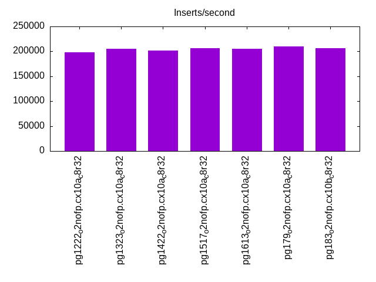
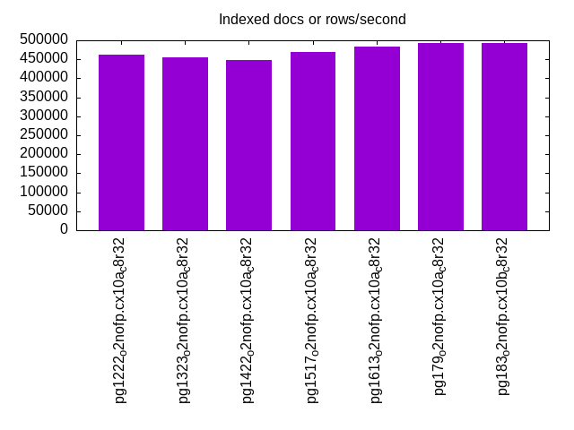
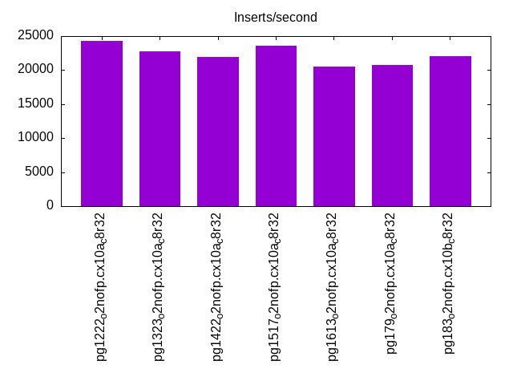
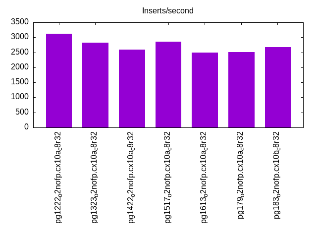
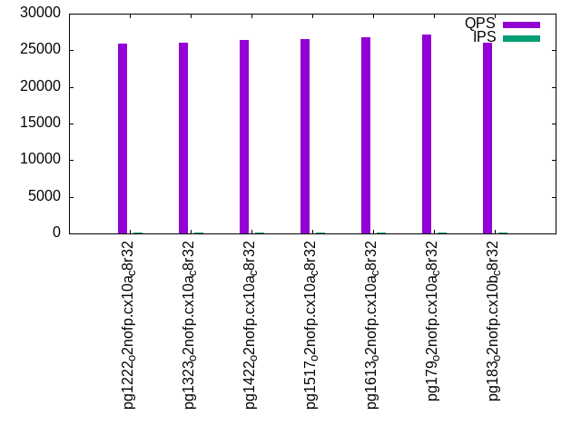
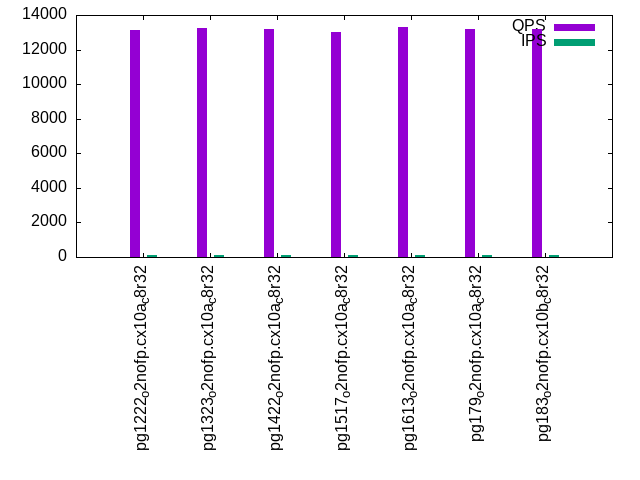
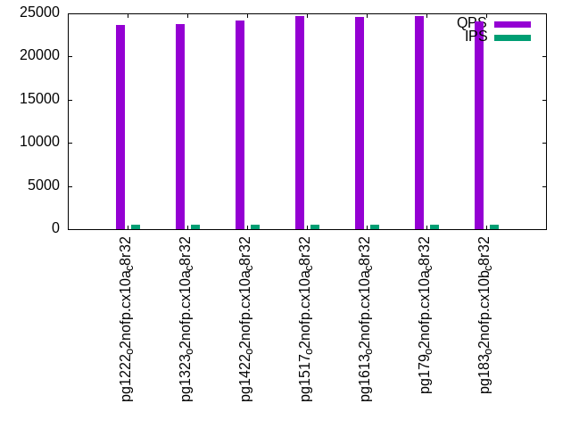
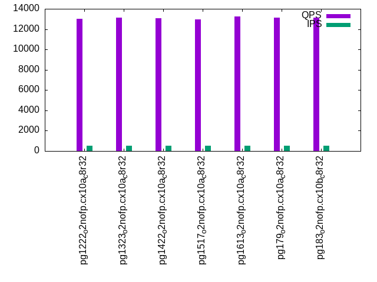
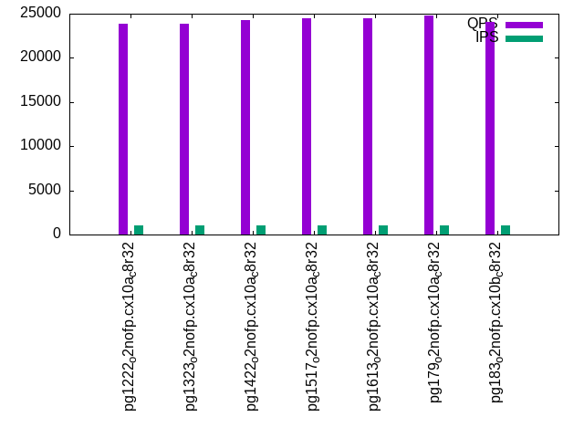
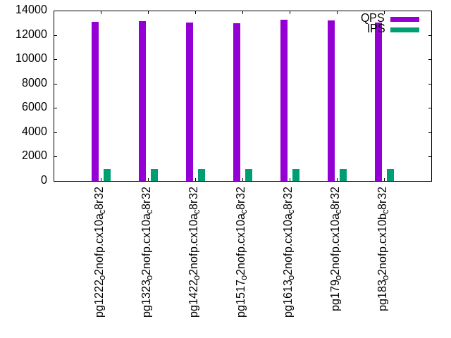

This is a report for the insert benchmark with 30M docs and 1 client(s). It is generated by scripts (bash, awk, sed) and Tufte might not be impressed. An overview of the insert benchmark is here and a short update is here. Below, by DBMS, I mean DBMS+version.config. An example is my8020.c10b40 where my means MySQL, 8020 is version 8.0.20 and c10b40 is the name for the configuration file.
The test server has 8 AMD cores, 32G RAM and an NVMe device for the database. The benchmark was run with 1 client and there were 1 or 3 connections per client (1 for queries or inserts without rate limits, 1+1 for rate limited inserts+deletes). It uses 1 table with a table per client. It loads 30M rows per table without secondary indexes, creates 3 secondary indexes per table, then inserts 40m+10m rows per table with a delete per insert to avoid growing the table. It then does 6 read+write tests for 1800s each that do queries as fast as possible with 100,100,500,500,1000,1000 inserts/s and the same for deletes/s per client concurrent with the queries. The database is cached by Postgres. Clients and the DBMS share one server.
The tested DBMS are:
The numbers are inserts/s for l.i0, l.i1 and l.i2, indexed docs (or rows) /s for l.x and queries/s for qr100, qp100 thru qr1000, qp1000" The values are the average rate over the entire test for inserts (IPS) and queries (QPS). The range of values for IPS and QPS is split into 3 parts: bottom 25%, middle 50%, top 25%. Values in the bottom 25% have a red background, values in the top 25% have a green background and values in the middle have no color. A gray background is used for values that can be ignored because the DBMS did not sustain the target insert rate. Red backgrounds are not used when the minimum value is within 80% of the max value.
| dbms | l.i0 | l.x | l.i1 | l.i2 | qr100 | qp100 | qr500 | qp500 | qr1000 | qp1000 |
|---|---|---|---|---|---|---|---|---|---|---|
| pg1222_o2nofp.cx10a_c8r32 | 198675 | 461540 | 24316 | 3126 | 25857 | 13114 | 23695 | 13018 | 23825 | 13082 |
| pg1323_o2nofp.cx10a_c8r32 | 205479 | 454547 | 22779 | 2826 | 26064 | 13244 | 23799 | 13153 | 23851 | 13114 |
| pg1422_o2nofp.cx10a_c8r32 | 201342 | 447763 | 21966 | 2589 | 26411 | 13170 | 24210 | 13075 | 24270 | 13017 |
| pg1517_o2nofp.cx10a_c8r32 | 206896 | 468752 | 23571 | 2863 | 26515 | 13015 | 24642 | 12974 | 24499 | 12980 |
| pg1613_o2nofp.cx10a_c8r32 | 205479 | 483872 | 20555 | 2487 | 26732 | 13294 | 24585 | 13275 | 24444 | 13263 |
| pg179_o2nofp.cx10a_c8r32 | 209790 | 491805 | 20779 | 2509 | 27209 | 13206 | 24727 | 13115 | 24823 | 13204 |
| pg183_o2nofp.cx10b_c8r32 | 206896 | 491805 | 22002 | 2674 | 26083 | 13208 | 24064 | 13140 | 24034 | 13027 |
This table has relative throughput, throughput for the DBMS relative to the DBMS in the first line, using the absolute throughput from the previous table. Values less than 0.95 have a yellow background. Values greater than 1.05 have a blue background.
| dbms | l.i0 | l.x | l.i1 | l.i2 | qr100 | qp100 | qr500 | qp500 | qr1000 | qp1000 |
|---|---|---|---|---|---|---|---|---|---|---|
| pg1222_o2nofp.cx10a_c8r32 | 1.00 | 1.00 | 1.00 | 1.00 | 1.00 | 1.00 | 1.00 | 1.00 | 1.00 | 1.00 |
| pg1323_o2nofp.cx10a_c8r32 | 1.03 | 0.98 | 0.94 | 0.90 | 1.01 | 1.01 | 1.00 | 1.01 | 1.00 | 1.00 |
| pg1422_o2nofp.cx10a_c8r32 | 1.01 | 0.97 | 0.90 | 0.83 | 1.02 | 1.00 | 1.02 | 1.00 | 1.02 | 1.00 |
| pg1517_o2nofp.cx10a_c8r32 | 1.04 | 1.02 | 0.97 | 0.92 | 1.03 | 0.99 | 1.04 | 1.00 | 1.03 | 0.99 |
| pg1613_o2nofp.cx10a_c8r32 | 1.03 | 1.05 | 0.85 | 0.80 | 1.03 | 1.01 | 1.04 | 1.02 | 1.03 | 1.01 |
| pg179_o2nofp.cx10a_c8r32 | 1.06 | 1.07 | 0.85 | 0.80 | 1.05 | 1.01 | 1.04 | 1.01 | 1.04 | 1.01 |
| pg183_o2nofp.cx10b_c8r32 | 1.04 | 1.07 | 0.90 | 0.86 | 1.01 | 1.01 | 1.02 | 1.01 | 1.01 | 1.00 |
This lists the average rate of inserts/s for the tests that do inserts concurrent with queries. For such tests the query rate is listed in the table above. The read+write tests are setup so that the insert rate should match the target rate every second. Cells that are not at least 95% of the target have a red background to indicate a failure to satisfy the target.
| dbms | qr100.L1 | qp100.L2 | qr500.L3 | qp500.L4 | qr1000.L5 | qp1000.L6 |
|---|---|---|---|---|---|---|
| pg1222_o2nofp.cx10a_c8r32 | 100 | 100 | 499 | 500 | 999 | 999 |
| pg1323_o2nofp.cx10a_c8r32 | 100 | 100 | 500 | 500 | 999 | 999 |
| pg1422_o2nofp.cx10a_c8r32 | 100 | 100 | 499 | 499 | 999 | 999 |
| pg1517_o2nofp.cx10a_c8r32 | 100 | 100 | 500 | 500 | 999 | 999 |
| pg1613_o2nofp.cx10a_c8r32 | 100 | 100 | 500 | 500 | 999 | 999 |
| pg179_o2nofp.cx10a_c8r32 | 100 | 100 | 499 | 500 | 999 | 999 |
| pg183_o2nofp.cx10b_c8r32 | 100 | 100 | 500 | 500 | 999 | 999 |
| target | 100 | 100 | 500 | 500 | 1000 | 1000 |
l.i0: load without secondary indexes. Graphs for performance per 1-second interval are here.
Average throughput:

Insert response time histogram: each cell has the percentage of responses that take <= the time in the header and max is the max response time in seconds. For the max column values in the top 25% of the range have a red background and in the bottom 25% of the range have a green background. The red background is not used when the min value is within 80% of the max value.
| dbms | 256us | 1ms | 4ms | 16ms | 64ms | 256ms | 1s | 4s | 16s | gt | max |
|---|---|---|---|---|---|---|---|---|---|---|---|
| pg1222_o2nofp.cx10a_c8r32 | 99.984 | 0.016 | 0.003 | ||||||||
| pg1323_o2nofp.cx10a_c8r32 | 99.987 | 0.013 | 0.002 | ||||||||
| pg1422_o2nofp.cx10a_c8r32 | 99.987 | 0.013 | 0.002 | ||||||||
| pg1517_o2nofp.cx10a_c8r32 | 99.992 | 0.008 | 0.003 | ||||||||
| pg1613_o2nofp.cx10a_c8r32 | 99.995 | 0.005 | 0.003 | ||||||||
| pg179_o2nofp.cx10a_c8r32 | 99.990 | 0.010 | 0.003 | ||||||||
| pg183_o2nofp.cx10b_c8r32 | 99.992 | 0.008 | 0.003 |
Performance metrics for the DBMS listed above. Some are normalized by throughput, others are not. Legend for results is here.
ips qps rps rmbps wps wmbps rpq rkbpq wpi wkbpi csps cpups cspq cpupq dbgb1 dbgb2 rss maxop p50 p99 tag 198675 0 0 0.0 733.8 83.2 0.000 0.000 0.004 0.429 24613 21.8 0.124 9 2.9 7.8 2.3 0.003 198974 196869 pg1222_o2nofp.cx10a_c8r32 205479 0 0 0.0 764.7 86.6 0.000 0.000 0.004 0.432 25330 20.3 0.123 8 2.9 7.8 2.4 0.002 206377 198181 pg1323_o2nofp.cx10a_c8r32 201342 0 0 0.0 750.4 85.2 0.000 0.000 0.004 0.433 24659 19.4 0.122 8 2.9 7.8 1.7 0.002 202173 193880 pg1422_o2nofp.cx10a_c8r32 206896 0 0 0.0 764.6 86.9 0.000 0.000 0.004 0.430 25003 19.5 0.121 8 2.9 7.8 2.4 0.003 207076 199967 pg1517_o2nofp.cx10a_c8r32 205479 0 0 0.0 761.1 86.5 0.000 0.000 0.004 0.431 24865 19.5 0.121 8 2.9 7.8 2.4 0.003 206377 198773 pg1613_o2nofp.cx10a_c8r32 209790 0 0 0.0 781.3 88.8 0.000 0.000 0.004 0.433 21920 19.5 0.104 7 2.9 7.8 2.4 0.003 210373 201867 pg179_o2nofp.cx10a_c8r32 206896 0 0 0.0 765.0 87.0 0.000 0.000 0.004 0.431 21647 19.4 0.105 8 2.9 7.8 2.4 0.003 208471 199967 pg183_o2nofp.cx10b_c8r32
Average values from iostat.
r/s rkB/s rrqm/s %rrqm r_await rareq-s w/s wkB/s wrqm/s %wrqm w_await wareq-s d/s dkB/s drqm/s %drqm d_await dareq-s f/s f_await aqu-sz %util 0.372 1.490 0.000 0.000 0.055 3.862 739.1 85846.5 40.60 5.702 0.420 115.1 2.317 13.02 0.000 0.000 0.667 5.198 41.28 1.390 0.382 10.27 pg1222_o2nofp.cx10a_c8r32 0.371 1.486 0.000 0.000 0.096 3.857 770.9 89510.1 38.92 5.336 0.414 114.8 2.379 12.49 0.000 0.000 0.715 5.028 42.96 1.465 0.370 11.28 pg1323_o2nofp.cx10a_c8r32 0.336 1.343 0.000 0.000 0.074 3.857 756.4 87951.9 37.54 5.171 0.435 115.2 2.435 17.71 0.000 0.000 0.671 6.083 42.10 1.429 0.386 10.82 pg1422_o2nofp.cx10a_c8r32 0.300 1.200 0.000 0.000 0.086 3.571 771.7 89923.1 40.18 5.410 0.471 115.3 0.121 2.629 0.000 0.000 0.237 7.490 43.11 1.614 0.474 11.71 pg1517_o2nofp.cx10a_c8r32 0.371 1.486 0.000 0.000 0.121 3.714 768.1 89462.2 40.19 5.401 0.423 115.3 0.129 2.629 0.000 0.000 0.176 3.316 42.97 1.568 0.395 11.57 pg1613_o2nofp.cx10a_c8r32 0.393 1.570 0.000 0.000 0.169 3.852 788.0 91805.3 37.56 4.984 0.397 115.3 0.067 1.185 0.000 0.000 0.170 2.136 43.39 1.362 0.363 10.67 pg179_o2nofp.cx10a_c8r32 0.314 1.257 0.000 0.000 0.066 3.143 771.1 89852.9 36.83 4.970 0.418 115.3 0.114 1.457 0.000 0.000 0.223 2.086 42.64 1.526 0.390 11.32 pg183_o2nofp.cx10b_c8r32
l.x: create secondary indexes.
Average throughput:

Performance metrics for the DBMS listed above. Some are normalized by throughput, others are not. Legend for results is here.
ips qps rps rmbps wps wmbps rpq rkbpq wpi wkbpi csps cpups cspq cpupq dbgb1 dbgb2 rss maxop p50 p99 tag 461540 0 0 0.0 834.9 102.4 0.000 0.000 0.002 0.227 2301 11.7 0.005 2 5.8 13.3 3.0 0.001 NA NA pg1222_o2nofp.cx10a_c8r32 454547 0 1 0.0 898.0 110.0 0.000 0.000 0.002 0.248 2674 11.7 0.006 2 5.8 13.3 3.0 0.002 NA NA pg1323_o2nofp.cx10a_c8r32 447763 0 0 0.0 892.6 109.3 0.000 0.000 0.002 0.250 2637 11.6 0.006 2 5.8 13.3 3.0 0.002 NA NA pg1422_o2nofp.cx10a_c8r32 468752 0 0 0.0 897.6 110.2 0.000 0.000 0.002 0.241 2526 11.6 0.005 2 5.8 13.3 3.0 0.002 NA NA pg1517_o2nofp.cx10a_c8r32 483872 0 1 0.0 920.2 112.9 0.000 0.000 0.002 0.239 2567 11.6 0.005 2 5.8 13.3 3.1 0.002 NA NA pg1613_o2nofp.cx10a_c8r32 491805 0 1 0.0 997.7 122.5 0.000 0.000 0.002 0.255 2894 11.6 0.006 2 5.8 13.3 3.0 0.001 NA NA pg179_o2nofp.cx10a_c8r32 491805 0 1 0.0 1072.7 131.8 0.000 0.000 0.002 0.275 2772 11.7 0.006 2 5.8 13.3 3.0 0.002 NA NA pg183_o2nofp.cx10b_c8r32
Average values from iostat.
r/s rkB/s rrqm/s %rrqm r_await rareq-s w/s wkB/s wrqm/s %wrqm w_await wareq-s d/s dkB/s drqm/s %drqm d_await dareq-s f/s f_await aqu-sz %util 0.582 2.327 0.000 0.000 0.085 2.182 910.5 114343 30.84 20.40 1.073 82.50 2.273 16.58 0.000 0.000 1.473 6.308 9.382 2.143 0.755 5.842 pg1222_o2nofp.cx10a_c8r32 0.617 2.467 0.000 0.000 0.058 1.667 972.6 122078 35.07 22.05 1.071 76.67 2.200 20.93 0.000 0.000 1.258 8.026 10.90 1.899 0.938 6.613 pg1323_o2nofp.cx10a_c8r32 0.517 2.067 0.000 0.000 0.030 2.000 966.7 121272 34.90 16.36 1.177 75.73 2.683 16.73 0.000 0.000 1.153 5.694 10.85 1.614 1.079 6.397 pg1422_o2nofp.cx10a_c8r32 0.436 1.745 0.000 0.000 0.086 2.545 979.0 123135 32.17 18.94 3.486 83.69 0.364 3.055 0.000 0.000 0.613 2.285 10.70 2.336 1.154 6.561 pg1517_o2nofp.cx10a_c8r32 0.691 2.764 0.000 0.000 0.149 2.545 1003.8 126167 32.84 20.19 3.081 84.21 0.182 1552.5 0.000 0.000 0.108 1109.1 11.25 2.198 1.255 6.849 pg1613_o2nofp.cx10a_c8r32 0.727 2.909 0.000 0.000 0.109 2.909 1088.3 136883 35.80 11.50 1.714 104.4 0.291 4024.9 0.000 0.000 0.381 2875.5 12.25 2.115 0.905 7.565 pg179_o2nofp.cx10a_c8r32 0.636 2.545 0.000 0.000 0.045 1.818 1170.1 147284 37.55 17.26 2.283 94.21 0.655 12961.5 0.000 0.000 0.534 2818.3 12.47 1.661 1.092 6.900 pg183_o2nofp.cx10b_c8r32
l.i1: continue load after secondary indexes created with 50 inserts per transaction. Graphs for performance per 1-second interval are here.
Average throughput:

Insert response time histogram: each cell has the percentage of responses that take <= the time in the header and max is the max response time in seconds. For the max column values in the top 25% of the range have a red background and in the bottom 25% of the range have a green background. The red background is not used when the min value is within 80% of the max value.
| dbms | 256us | 1ms | 4ms | 16ms | 64ms | 256ms | 1s | 4s | 16s | gt | max |
|---|---|---|---|---|---|---|---|---|---|---|---|
| pg1222_o2nofp.cx10a_c8r32 | 60.374 | 39.625 | 0.001 | 0.016 | |||||||
| pg1323_o2nofp.cx10a_c8r32 | 58.417 | 41.581 | 0.001 | nonzero | 0.041 | ||||||
| pg1422_o2nofp.cx10a_c8r32 | 56.924 | 43.076 | nonzero | nonzero | 0.026 | ||||||
| pg1517_o2nofp.cx10a_c8r32 | 57.026 | 42.973 | 0.001 | nonzero | 0.030 | ||||||
| pg1613_o2nofp.cx10a_c8r32 | 63.599 | 36.396 | 0.005 | nonzero | 0.033 | ||||||
| pg179_o2nofp.cx10a_c8r32 | 55.229 | 44.770 | nonzero | 0.001 | 0.034 | ||||||
| pg183_o2nofp.cx10b_c8r32 | 50.193 | 49.805 | nonzero | 0.002 | 0.045 |
Delete response time histogram: each cell has the percentage of responses that take <= the time in the header and max is the max response time in seconds. For the max column values in the top 25% of the range have a red background and in the bottom 25% of the range have a green background. The red background is not used when the min value is within 80% of the max value.
| dbms | 256us | 1ms | 4ms | 16ms | 64ms | 256ms | 1s | 4s | 16s | gt | max |
|---|---|---|---|---|---|---|---|---|---|---|---|
| pg1222_o2nofp.cx10a_c8r32 | 0.007 | 32.052 | 59.559 | 8.381 | nonzero | 0.030 | |||||
| pg1323_o2nofp.cx10a_c8r32 | 0.002 | 28.085 | 61.130 | 10.781 | 0.001 | 0.045 | |||||
| pg1422_o2nofp.cx10a_c8r32 | 0.002 | 29.019 | 56.285 | 14.694 | nonzero | 0.030 | |||||
| pg1517_o2nofp.cx10a_c8r32 | 27.267 | 72.248 | 0.484 | 0.001 | 0.044 | ||||||
| pg1613_o2nofp.cx10a_c8r32 | 0.001 | 27.370 | 53.859 | 18.771 | nonzero | 0.033 | |||||
| pg179_o2nofp.cx10a_c8r32 | 0.003 | 27.183 | 54.944 | 17.867 | 0.002 | 0.037 | |||||
| pg183_o2nofp.cx10b_c8r32 | 0.001 | 26.053 | 71.138 | 2.807 | 0.001 | 0.045 |
Performance metrics for the DBMS listed above. Some are normalized by throughput, others are not. Legend for results is here.
ips qps rps rmbps wps wmbps rpq rkbpq wpi wkbpi csps cpups cspq cpupq dbgb1 dbgb2 rss maxop p50 p99 tag 24316 0 0 0.0 301.5 32.5 0.000 0.000 0.012 1.370 12248 22.1 0.504 73 8.1 38.6 5.5 0.016 16798 10398 pg1222_o2nofp.cx10a_c8r32 22779 0 0 0.0 284.5 30.7 0.000 0.000 0.012 1.379 11500 21.8 0.505 77 8.1 38.7 8.1 0.041 15998 10049 pg1323_o2nofp.cx10a_c8r32 21966 0 0 0.0 271.6 29.2 0.000 0.000 0.012 1.363 10656 20.3 0.485 74 7.9 38.4 7.0 0.026 15048 9448 pg1422_o2nofp.cx10a_c8r32 23571 0 0 0.0 289.7 31.4 0.000 0.000 0.012 1.364 11845 20.6 0.503 70 7.8 38.4 7.7 0.030 18247 12798 pg1517_o2nofp.cx10a_c8r32 20555 0 0 0.0 251.3 27.2 0.000 0.000 0.012 1.354 10430 19.7 0.507 77 7.8 38.3 6.1 0.033 13898 7149 pg1613_o2nofp.cx10a_c8r32 20779 0 0 0.0 249.3 28.1 0.000 0.000 0.012 1.386 8595 19.8 0.414 76 7.8 38.3 1.6 0.034 13698 9247 pg179_o2nofp.cx10a_c8r32 22002 0 0 0.0 277.5 30.5 0.000 0.000 0.013 1.419 9108 20.2 0.414 73 7.8 38.3 7.8 0.045 16797 11898 pg183_o2nofp.cx10b_c8r32
Average values from iostat.
r/s rkB/s rrqm/s %rrqm r_await rareq-s w/s wkB/s wrqm/s %wrqm w_await wareq-s d/s dkB/s drqm/s %drqm d_await dareq-s f/s f_await aqu-sz %util 0.120 0.478 0.000 0.000 0.043 1.915 301.2 33264.0 18.27 6.163 0.632 110.0 2.097 10.41 0.000 0.000 0.672 4.903 21.56 1.556 0.190 5.579 pg1222_o2nofp.cx10a_c8r32 0.115 0.459 0.000 0.000 0.039 1.863 284.2 31363.7 17.00 5.935 0.659 109.7 2.092 44.85 0.000 0.000 0.672 19.25 20.45 1.547 0.183 5.316 pg1323_o2nofp.cx10a_c8r32 0.104 0.417 0.000 0.000 0.046 1.741 271.3 29897.8 16.50 6.379 0.690 110.1 2.090 10.88 0.000 0.000 0.685 5.132 19.81 1.597 0.178 5.166 pg1422_o2nofp.cx10a_c8r32 0.105 0.421 0.000 0.000 0.049 1.716 289.5 32128.4 14.04 4.785 0.604 112.0 0.006 0.036 0.000 0.000 0.019 0.103 21.22 1.576 0.180 5.314 pg1517_o2nofp.cx10a_c8r32 0.099 0.398 0.000 0.000 0.048 1.660 251.0 27792.8 12.10 4.791 0.680 111.0 0.004 43.24 0.000 0.000 0.010 216.1 18.47 1.530 0.155 4.556 pg1613_o2nofp.cx10a_c8r32 0.104 0.417 0.000 0.000 0.068 1.646 248.9 28763.2 11.50 4.616 0.766 114.7 0.013 21.47 0.000 0.000 0.033 27.00 14.49 1.575 0.163 4.182 pg179_o2nofp.cx10a_c8r32 0.114 0.455 0.000 0.000 0.055 1.823 277.3 31199.2 12.35 4.450 0.685 113.2 0.012 7.140 0.000 0.000 0.043 17.77 18.47 1.589 0.183 5.075 pg183_o2nofp.cx10b_c8r32
l.i2: continue load after secondary indexes created with 5 inserts per transaction. Graphs for performance per 1-second interval are here.
Average throughput:

Insert response time histogram: each cell has the percentage of responses that take <= the time in the header and max is the max response time in seconds. For the max column values in the top 25% of the range have a red background and in the bottom 25% of the range have a green background. The red background is not used when the min value is within 80% of the max value.
| dbms | 256us | 1ms | 4ms | 16ms | 64ms | 256ms | 1s | 4s | 16s | gt | max |
|---|---|---|---|---|---|---|---|---|---|---|---|
| pg1222_o2nofp.cx10a_c8r32 | 60.636 | 39.364 | nonzero | nonzero | 0.023 | ||||||
| pg1323_o2nofp.cx10a_c8r32 | 54.767 | 45.232 | nonzero | 0.003 | |||||||
| pg1422_o2nofp.cx10a_c8r32 | 46.966 | 53.033 | nonzero | 0.003 | |||||||
| pg1517_o2nofp.cx10a_c8r32 | 55.573 | 44.427 | nonzero | nonzero | 0.006 | ||||||
| pg1613_o2nofp.cx10a_c8r32 | 51.130 | 48.870 | nonzero | nonzero | 0.005 | ||||||
| pg179_o2nofp.cx10a_c8r32 | 44.147 | 55.853 | nonzero | 0.003 | |||||||
| pg183_o2nofp.cx10b_c8r32 | 49.579 | 50.421 | 0.001 | nonzero | 0.004 |
Delete response time histogram: each cell has the percentage of responses that take <= the time in the header and max is the max response time in seconds. For the max column values in the top 25% of the range have a red background and in the bottom 25% of the range have a green background. The red background is not used when the min value is within 80% of the max value.
| dbms | 256us | 1ms | 4ms | 16ms | 64ms | 256ms | 1s | 4s | 16s | gt | max |
|---|---|---|---|---|---|---|---|---|---|---|---|
| pg1222_o2nofp.cx10a_c8r32 | 5.287 | 28.365 | 66.307 | 0.040 | nonzero | 0.024 | |||||
| pg1323_o2nofp.cx10a_c8r32 | 4.901 | 32.371 | 62.037 | 0.690 | 0.011 | ||||||
| pg1422_o2nofp.cx10a_c8r32 | 4.833 | 27.857 | 67.149 | 0.161 | 0.007 | ||||||
| pg1517_o2nofp.cx10a_c8r32 | 4.826 | 22.556 | 72.594 | 0.023 | 0.008 | ||||||
| pg1613_o2nofp.cx10a_c8r32 | 4.191 | 31.853 | 56.615 | 7.341 | nonzero | 0.017 | |||||
| pg179_o2nofp.cx10a_c8r32 | 4.576 | 27.340 | 66.904 | 1.179 | 0.007 | ||||||
| pg183_o2nofp.cx10b_c8r32 | 4.355 | 26.289 | 69.322 | 0.034 | nonzero | 0.024 |
Performance metrics for the DBMS listed above. Some are normalized by throughput, others are not. Legend for results is here.
ips qps rps rmbps wps wmbps rpq rkbpq wpi wkbpi csps cpups cspq cpupq dbgb1 dbgb2 rss maxop p50 p99 tag 3126 0 0 0.0 67.6 6.5 0.000 0.000 0.022 2.115 14706 15.9 4.705 407 8.2 40.8 6.6 0.023 2260 1360 pg1222_o2nofp.cx10a_c8r32 2826 0 0 0.0 65.1 6.2 0.000 0.000 0.023 2.235 13392 15.8 4.739 447 8.1 40.6 5.7 0.003 1925 1235 pg1323_o2nofp.cx10a_c8r32 2589 0 0 0.0 61.0 5.7 0.000 0.000 0.024 2.258 11760 15.2 4.542 470 7.9 40.2 8.0 0.003 1820 1284 pg1422_o2nofp.cx10a_c8r32 2863 0 0 0.0 62.3 6.1 0.000 0.000 0.022 2.174 13013 15.3 4.546 428 7.9 40.3 0.2 0.006 2155 1380 pg1517_o2nofp.cx10a_c8r32 2487 0 0 0.0 56.8 5.5 0.000 0.000 0.023 2.259 11336 15.1 4.558 486 7.9 39.9 6.4 0.005 1620 975 pg1613_o2nofp.cx10a_c8r32 2509 0 0 0.0 55.8 5.5 0.000 0.000 0.022 2.234 9448 15.2 3.765 485 7.9 39.7 0.3 0.003 1780 1190 pg179_o2nofp.cx10a_c8r32 2674 0 0 0.0 58.6 5.8 0.000 0.000 0.022 2.230 10058 15.1 3.762 452 7.9 40.3 1.7 0.004 1920 1375 pg183_o2nofp.cx10b_c8r32
Average values from iostat.
r/s rkB/s rrqm/s %rrqm r_await rareq-s w/s wkB/s wrqm/s %wrqm w_await wareq-s d/s dkB/s drqm/s %drqm d_await dareq-s f/s f_await aqu-sz %util 0.005 0.021 0.000 0.000 0.002 0.107 67.41 6582.8 8.492 8.920 0.505 95.02 2.061 20.18 0.000 0.000 0.652 6.863 8.433 1.580 0.044 2.388 pg1222_o2nofp.cx10a_c8r32 0.005 0.018 0.000 0.000 0.001 0.091 65.19 6321.2 8.167 8.918 0.494 95.06 2.059 15.06 0.000 0.000 0.661 4.884 8.245 1.578 0.045 2.375 pg1323_o2nofp.cx10a_c8r32 0.004 0.018 0.000 0.000 0.003 0.083 61.06 5850.3 7.918 9.382 0.479 93.19 2.053 14.85 0.000 0.000 0.643 5.264 7.963 1.567 0.042 2.286 pg1422_o2nofp.cx10a_c8r32 0.005 0.018 0.000 0.000 0.003 0.086 62.38 6228.7 5.132 3.918 0.530 98.64 0.035 5.681 0.000 0.000 0.004 0.491 8.315 1.553 0.041 2.162 pg1517_o2nofp.cx10a_c8r32 0.003 0.013 0.000 0.000 0.002 0.065 56.75 5610.3 4.267 3.944 0.533 96.55 0.030 4.374 0.000 0.000 0.003 0.380 7.833 1.548 0.038 1.974 pg1613_o2nofp.cx10a_c8r32 0.003 0.013 0.000 0.000 0.003 0.060 55.83 5609.1 3.372 2.736 0.523 98.69 0.008 1.705 0.000 0.000 0.003 0.541 7.355 1.571 0.037 1.804 pg179_o2nofp.cx10a_c8r32 0.004 0.017 0.000 0.000 0.009 0.086 58.60 5968.6 3.623 3.095 0.638 96.24 0.008 1.632 0.000 0.000 0.001 0.529 7.431 1.598 0.040 1.968 pg183_o2nofp.cx10b_c8r32
qr100.L1: range queries with 100 insert/s per client. Graphs for performance per 1-second interval are here.
Average throughput:

Query response time histogram: each cell has the percentage of responses that take <= the time in the header and max is the max response time in seconds. For max values in the top 25% of the range have a red background and in the bottom 25% of the range have a green background. The red background is not used when the min value is within 80% of the max value.
| dbms | 256us | 1ms | 4ms | 16ms | 64ms | 256ms | 1s | 4s | 16s | gt | max |
|---|---|---|---|---|---|---|---|---|---|---|---|
| pg1222_o2nofp.cx10a_c8r32 | 99.993 | 0.007 | 0.001 | ||||||||
| pg1323_o2nofp.cx10a_c8r32 | 99.994 | 0.006 | 0.001 | ||||||||
| pg1422_o2nofp.cx10a_c8r32 | 99.995 | 0.005 | nonzero | 0.002 | |||||||
| pg1517_o2nofp.cx10a_c8r32 | 99.995 | 0.005 | nonzero | 0.004 | |||||||
| pg1613_o2nofp.cx10a_c8r32 | 99.995 | 0.005 | nonzero | 0.003 | |||||||
| pg179_o2nofp.cx10a_c8r32 | 99.994 | 0.006 | nonzero | 0.003 | |||||||
| pg183_o2nofp.cx10b_c8r32 | 99.993 | 0.007 | 0.001 |
Insert response time histogram: each cell has the percentage of responses that take <= the time in the header and max is the max response time in seconds. For max values in the top 25% of the range have a red background and in the bottom 25% of the range have a green background. The red background is not used when the min value is within 80% of the max value.
| dbms | 256us | 1ms | 4ms | 16ms | 64ms | 256ms | 1s | 4s | 16s | gt | max |
|---|---|---|---|---|---|---|---|---|---|---|---|
| pg1222_o2nofp.cx10a_c8r32 | 9.722 | 90.250 | 0.028 | 0.005 | |||||||
| pg1323_o2nofp.cx10a_c8r32 | 9.944 | 90.028 | 0.028 | 0.005 | |||||||
| pg1422_o2nofp.cx10a_c8r32 | 13.667 | 86.306 | 0.028 | 0.005 | |||||||
| pg1517_o2nofp.cx10a_c8r32 | 13.500 | 86.472 | 0.028 | 0.005 | |||||||
| pg1613_o2nofp.cx10a_c8r32 | 15.528 | 84.444 | 0.028 | 0.005 | |||||||
| pg179_o2nofp.cx10a_c8r32 | 22.306 | 77.667 | 0.028 | 0.005 | |||||||
| pg183_o2nofp.cx10b_c8r32 | 23.972 | 76.000 | 0.028 | 0.005 |
Delete response time histogram: each cell has the percentage of responses that take <= the time in the header and max is the max response time in seconds. For max values in the top 25% of the range have a red background and in the bottom 25% of the range have a green background. The red background is not used when the min value is within 80% of the max value.
| dbms | 256us | 1ms | 4ms | 16ms | 64ms | 256ms | 1s | 4s | 16s | gt | max |
|---|---|---|---|---|---|---|---|---|---|---|---|
| pg1222_o2nofp.cx10a_c8r32 | 66.389 | 33.611 | 0.002 | ||||||||
| pg1323_o2nofp.cx10a_c8r32 | 66.444 | 33.556 | 0.002 | ||||||||
| pg1422_o2nofp.cx10a_c8r32 | 64.444 | 35.556 | 0.002 | ||||||||
| pg1517_o2nofp.cx10a_c8r32 | 0.028 | 66.194 | 33.778 | 0.002 | |||||||
| pg1613_o2nofp.cx10a_c8r32 | 64.472 | 35.528 | 0.002 | ||||||||
| pg179_o2nofp.cx10a_c8r32 | 63.750 | 36.250 | 0.002 | ||||||||
| pg183_o2nofp.cx10b_c8r32 | 61.889 | 38.111 | 0.002 |
Performance metrics for the DBMS listed above. Some are normalized by throughput, others are not. Legend for results is here.
ips qps rps rmbps wps wmbps rpq rkbpq wpi wkbpi csps cpups cspq cpupq dbgb1 dbgb2 rss maxop p50 p99 tag 100 25857 0 0.0 15.0 0.8 0.000 0.000 0.150 7.776 98735 8.5 3.818 26 8.2 40.8 0.1 0.001 25863 25389 pg1222_o2nofp.cx10a_c8r32 100 26064 0 0.0 14.9 0.8 0.000 0.000 0.149 7.795 99526 8.6 3.818 26 8.1 40.6 0.1 0.001 26060 25574 pg1323_o2nofp.cx10a_c8r32 100 26411 0 0.0 15.4 0.8 0.000 0.000 0.155 7.938 100861 9.0 3.819 27 7.9 40.2 0.1 0.002 26443 26022 pg1422_o2nofp.cx10a_c8r32 100 26515 0 0.0 13.1 0.8 0.000 0.000 0.131 7.692 101173 8.6 3.816 26 7.9 40.3 0.1 0.004 26535 26189 pg1517_o2nofp.cx10a_c8r32 100 26732 0 0.0 13.0 0.8 0.000 0.000 0.130 7.706 102002 8.1 3.816 24 7.9 39.9 0.1 0.003 26731 26299 pg1613_o2nofp.cx10a_c8r32 100 27209 0 0.0 12.2 0.8 0.000 0.000 0.123 7.737 103865 8.3 3.817 24 7.9 39.7 0.1 0.003 27241 26817 pg179_o2nofp.cx10a_c8r32 100 26083 0 0.0 12.3 0.8 0.000 0.000 0.123 7.731 99517 8.5 3.815 26 7.9 40.3 0.1 0.001 26107 25673 pg183_o2nofp.cx10b_c8r32
Average values from iostat.
r/s rkB/s rrqm/s %rrqm r_await rareq-s w/s wkB/s wrqm/s %wrqm w_await wareq-s d/s dkB/s drqm/s %drqm d_await dareq-s f/s f_await aqu-sz %util 0.000 0.000 0.000 0.000 0.000 0.000 14.97 775.0 2.967 17.63 1.600 52.51 2.000 9.597 0.000 0.000 0.852 4.565 3.444 1.885 0.031 1.525 pg1222_o2nofp.cx10a_c8r32 0.000 0.000 0.000 0.000 0.000 0.000 14.91 777.0 2.973 17.74 1.594 52.79 2.000 9.602 0.000 0.000 0.785 4.801 3.399 1.900 0.031 1.455 pg1323_o2nofp.cx10a_c8r32 0.000 0.000 0.000 0.000 0.000 0.000 15.42 790.3 3.059 17.78 1.617 52.39 1.998 9.987 0.000 0.000 0.815 4.980 3.474 1.938 0.032 1.554 pg1422_o2nofp.cx10a_c8r32 0.000 0.000 0.000 0.000 0.000 0.000 13.09 766.4 0.262 2.068 1.941 60.37 0.001 0.002 0.000 0.000 0.000 0.011 3.451 1.950 0.031 1.403 pg1517_o2nofp.cx10a_c8r32 0.000 0.000 0.000 0.000 0.000 0.000 13.02 768.1 0.255 2.047 1.966 60.70 0.001 0.002 0.000 0.000 0.003 0.011 3.424 2.001 0.031 1.402 pg1613_o2nofp.cx10a_c8r32 0.000 0.000 0.000 0.000 0.000 0.000 12.23 770.1 0.249 2.160 1.973 66.53 0.001 0.002 0.000 0.000 0.006 0.011 2.738 2.005 0.028 1.141 pg179_o2nofp.cx10a_c8r32 0.000 0.000 0.000 0.000 0.000 0.000 12.32 770.4 0.247 2.119 1.965 65.89 0.001 0.002 0.000 0.000 0.003 0.011 2.799 1.870 0.028 1.134 pg183_o2nofp.cx10b_c8r32
qp100.L2: point queries with 100 insert/s per client. Graphs for performance per 1-second interval are here.
Average throughput:

Query response time histogram: each cell has the percentage of responses that take <= the time in the header and max is the max response time in seconds. For max values in the top 25% of the range have a red background and in the bottom 25% of the range have a green background. The red background is not used when the min value is within 80% of the max value.
| dbms | 256us | 1ms | 4ms | 16ms | 64ms | 256ms | 1s | 4s | 16s | gt | max |
|---|---|---|---|---|---|---|---|---|---|---|---|
| pg1222_o2nofp.cx10a_c8r32 | 99.982 | 0.018 | nonzero | 0.001 | |||||||
| pg1323_o2nofp.cx10a_c8r32 | 99.986 | 0.014 | 0.001 | ||||||||
| pg1422_o2nofp.cx10a_c8r32 | 99.986 | 0.014 | nonzero | 0.002 | |||||||
| pg1517_o2nofp.cx10a_c8r32 | 99.987 | 0.013 | nonzero | 0.003 | |||||||
| pg1613_o2nofp.cx10a_c8r32 | 99.986 | 0.014 | nonzero | 0.001 | |||||||
| pg179_o2nofp.cx10a_c8r32 | 99.987 | 0.013 | nonzero | 0.002 | |||||||
| pg183_o2nofp.cx10b_c8r32 | 99.984 | 0.016 | 0.001 |
Insert response time histogram: each cell has the percentage of responses that take <= the time in the header and max is the max response time in seconds. For max values in the top 25% of the range have a red background and in the bottom 25% of the range have a green background. The red background is not used when the min value is within 80% of the max value.
| dbms | 256us | 1ms | 4ms | 16ms | 64ms | 256ms | 1s | 4s | 16s | gt | max |
|---|---|---|---|---|---|---|---|---|---|---|---|
| pg1222_o2nofp.cx10a_c8r32 | 0.639 | 99.333 | 0.028 | 0.005 | |||||||
| pg1323_o2nofp.cx10a_c8r32 | 0.944 | 99.028 | 0.028 | 0.005 | |||||||
| pg1422_o2nofp.cx10a_c8r32 | 1.389 | 98.583 | 0.028 | 0.004 | |||||||
| pg1517_o2nofp.cx10a_c8r32 | 1.028 | 98.944 | 0.028 | 0.004 | |||||||
| pg1613_o2nofp.cx10a_c8r32 | 1.611 | 98.361 | 0.028 | 0.005 | |||||||
| pg179_o2nofp.cx10a_c8r32 | 1.917 | 98.056 | 0.028 | 0.005 | |||||||
| pg183_o2nofp.cx10b_c8r32 | 4.500 | 95.472 | 0.028 | 0.005 |
Delete response time histogram: each cell has the percentage of responses that take <= the time in the header and max is the max response time in seconds. For max values in the top 25% of the range have a red background and in the bottom 25% of the range have a green background. The red background is not used when the min value is within 80% of the max value.
| dbms | 256us | 1ms | 4ms | 16ms | 64ms | 256ms | 1s | 4s | 16s | gt | max |
|---|---|---|---|---|---|---|---|---|---|---|---|
| pg1222_o2nofp.cx10a_c8r32 | 36.194 | 63.806 | 0.003 | ||||||||
| pg1323_o2nofp.cx10a_c8r32 | 27.000 | 73.000 | 0.003 | ||||||||
| pg1422_o2nofp.cx10a_c8r32 | 14.778 | 85.222 | 0.004 | ||||||||
| pg1517_o2nofp.cx10a_c8r32 | 17.778 | 82.222 | 0.003 | ||||||||
| pg1613_o2nofp.cx10a_c8r32 | 14.917 | 85.083 | 0.004 | ||||||||
| pg179_o2nofp.cx10a_c8r32 | 16.444 | 83.556 | 0.004 | ||||||||
| pg183_o2nofp.cx10b_c8r32 | 8.194 | 91.806 | 0.003 |
Performance metrics for the DBMS listed above. Some are normalized by throughput, others are not. Legend for results is here.
ips qps rps rmbps wps wmbps rpq rkbpq wpi wkbpi csps cpups cspq cpupq dbgb1 dbgb2 rss maxop p50 p99 tag 100 13114 0 0.0 63.4 1.7 0.000 0.000 0.634 17.064 50722 10.1 3.868 62 8.2 40.4 0.2 0.001 13115 12970 pg1222_o2nofp.cx10a_c8r32 100 13244 0 0.0 63.4 1.7 0.000 0.000 0.634 17.056 51220 9.8 3.867 59 8.1 40.4 0.2 0.001 13246 13128 pg1323_o2nofp.cx10a_c8r32 100 13170 0 0.0 62.5 1.7 0.000 0.000 0.626 17.036 50907 10.1 3.866 61 7.9 40.2 0.1 0.002 13182 13067 pg1422_o2nofp.cx10a_c8r32 100 13015 0 0.0 60.3 1.6 0.000 0.000 0.603 16.783 50242 10.0 3.860 61 7.9 40.2 0.1 0.003 13020 12924 pg1517_o2nofp.cx10a_c8r32 100 13294 0 0.0 60.0 1.6 0.000 0.000 0.601 16.787 51316 9.7 3.860 58 7.9 39.9 0.1 0.001 13294 13166 pg1613_o2nofp.cx10a_c8r32 100 13206 0 0.0 59.0 1.6 0.000 0.000 0.591 16.790 50995 10.1 3.861 61 7.9 39.7 0.1 0.002 13214 13102 pg179_o2nofp.cx10a_c8r32 100 13208 0 0.0 58.7 1.6 0.000 0.000 0.588 16.787 50972 10.1 3.859 61 7.9 40.2 0.1 0.001 13214 13086 pg183_o2nofp.cx10b_c8r32
Average values from iostat.
r/s rkB/s rrqm/s %rrqm r_await rareq-s w/s wkB/s wrqm/s %wrqm w_await wareq-s d/s dkB/s drqm/s %drqm d_await dareq-s f/s f_await aqu-sz %util 0.000 0.000 0.000 0.000 0.000 0.000 63.36 1698.9 3.474 6.504 1.156 29.34 2.013 219.5 0.000 0.000 0.662 35.66 3.383 1.719 0.077 1.667 pg1222_o2nofp.cx10a_c8r32 0.000 0.000 0.000 0.000 0.000 0.000 63.35 1697.9 3.530 6.604 1.147 29.47 2.007 119.1 0.000 0.000 0.752 28.61 3.404 1.688 0.078 1.636 pg1323_o2nofp.cx10a_c8r32 0.000 0.000 0.000 0.000 0.000 0.000 62.41 1692.5 3.576 6.794 1.184 29.72 2.001 9.998 0.000 0.000 0.619 4.998 3.419 1.742 0.078 1.648 pg1422_o2nofp.cx10a_c8r32 0.001 0.002 0.000 0.000 0.000 0.011 60.18 1668.9 0.655 1.177 1.291 31.15 0.004 54.77 0.000 0.000 0.005 39.13 3.400 1.745 0.079 1.584 pg1517_o2nofp.cx10a_c8r32 0.000 0.000 0.000 0.000 0.000 0.000 59.94 1669.3 0.642 1.335 1.286 31.13 0.001 0.002 0.000 0.000 0.003 0.011 3.414 1.730 0.079 1.530 pg1613_o2nofp.cx10a_c8r32 0.000 0.000 0.000 0.000 0.000 0.000 58.91 1667.9 0.639 1.268 1.410 32.42 0.001 0.002 0.000 0.000 0.003 0.011 2.589 1.770 0.085 1.440 pg179_o2nofp.cx10a_c8r32 0.000 0.000 0.000 0.000 0.000 0.000 58.62 1669.2 0.653 1.316 1.414 32.65 0.004 54.77 0.000 0.000 0.006 45.65 2.580 1.807 0.084 1.426 pg183_o2nofp.cx10b_c8r32
qr500.L3: range queries with 500 insert/s per client. Graphs for performance per 1-second interval are here.
Average throughput:

Query response time histogram: each cell has the percentage of responses that take <= the time in the header and max is the max response time in seconds. For max values in the top 25% of the range have a red background and in the bottom 25% of the range have a green background. The red background is not used when the min value is within 80% of the max value.
| dbms | 256us | 1ms | 4ms | 16ms | 64ms | 256ms | 1s | 4s | 16s | gt | max |
|---|---|---|---|---|---|---|---|---|---|---|---|
| pg1222_o2nofp.cx10a_c8r32 | 99.991 | 0.009 | nonzero | 0.002 | |||||||
| pg1323_o2nofp.cx10a_c8r32 | 99.992 | 0.008 | nonzero | 0.002 | |||||||
| pg1422_o2nofp.cx10a_c8r32 | 99.992 | 0.008 | nonzero | 0.002 | |||||||
| pg1517_o2nofp.cx10a_c8r32 | 99.992 | 0.008 | nonzero | 0.002 | |||||||
| pg1613_o2nofp.cx10a_c8r32 | 99.992 | 0.008 | nonzero | 0.002 | |||||||
| pg179_o2nofp.cx10a_c8r32 | 99.992 | 0.008 | nonzero | 0.002 | |||||||
| pg183_o2nofp.cx10b_c8r32 | 99.991 | 0.009 | nonzero | 0.001 |
Insert response time histogram: each cell has the percentage of responses that take <= the time in the header and max is the max response time in seconds. For max values in the top 25% of the range have a red background and in the bottom 25% of the range have a green background. The red background is not used when the min value is within 80% of the max value.
| dbms | 256us | 1ms | 4ms | 16ms | 64ms | 256ms | 1s | 4s | 16s | gt | max |
|---|---|---|---|---|---|---|---|---|---|---|---|
| pg1222_o2nofp.cx10a_c8r32 | 71.056 | 28.939 | 0.006 | 0.004 | |||||||
| pg1323_o2nofp.cx10a_c8r32 | 68.144 | 31.850 | 0.006 | 0.005 | |||||||
| pg1422_o2nofp.cx10a_c8r32 | 73.256 | 26.739 | 0.006 | 0.005 | |||||||
| pg1517_o2nofp.cx10a_c8r32 | 70.328 | 29.667 | 0.006 | 0.005 | |||||||
| pg1613_o2nofp.cx10a_c8r32 | 69.700 | 30.289 | 0.011 | 0.004 | |||||||
| pg179_o2nofp.cx10a_c8r32 | 74.922 | 25.072 | 0.006 | 0.005 | |||||||
| pg183_o2nofp.cx10b_c8r32 | 75.878 | 24.117 | 0.006 | 0.005 |
Delete response time histogram: each cell has the percentage of responses that take <= the time in the header and max is the max response time in seconds. For max values in the top 25% of the range have a red background and in the bottom 25% of the range have a green background. The red background is not used when the min value is within 80% of the max value.
| dbms | 256us | 1ms | 4ms | 16ms | 64ms | 256ms | 1s | 4s | 16s | gt | max |
|---|---|---|---|---|---|---|---|---|---|---|---|
| pg1222_o2nofp.cx10a_c8r32 | 8.072 | 91.511 | 0.417 | 0.005 | |||||||
| pg1323_o2nofp.cx10a_c8r32 | 2.417 | 96.683 | 0.900 | 0.005 | |||||||
| pg1422_o2nofp.cx10a_c8r32 | 1.900 | 97.106 | 0.994 | 0.005 | |||||||
| pg1517_o2nofp.cx10a_c8r32 | 2.256 | 96.783 | 0.961 | 0.005 | |||||||
| pg1613_o2nofp.cx10a_c8r32 | 6.822 | 91.911 | 1.267 | 0.006 | |||||||
| pg179_o2nofp.cx10a_c8r32 | 4.783 | 92.083 | 3.133 | 0.005 | |||||||
| pg183_o2nofp.cx10b_c8r32 | 3.672 | 94.689 | 1.639 | 0.006 |
Performance metrics for the DBMS listed above. Some are normalized by throughput, others are not. Legend for results is here.
ips qps rps rmbps wps wmbps rpq rkbpq wpi wkbpi csps cpups cspq cpupq dbgb1 dbgb2 rss maxop p50 p99 tag 499 23695 0 0.0 70.5 2.2 0.000 0.000 0.141 4.604 90778 9.4 3.831 32 8.2 39.3 0.4 0.002 23709 22393 pg1222_o2nofp.cx10a_c8r32 500 23799 0 0.0 70.6 2.3 0.000 0.000 0.141 4.618 91128 9.4 3.829 32 8.2 39.3 0.4 0.002 23799 22491 pg1323_o2nofp.cx10a_c8r32 499 24210 0 0.0 69.8 2.3 0.000 0.000 0.140 4.646 92639 9.3 3.826 31 7.9 39.0 0.3 0.002 24216 22874 pg1422_o2nofp.cx10a_c8r32 500 24642 0 0.0 67.5 2.2 0.000 0.000 0.135 4.589 94200 9.3 3.823 30 7.9 39.0 0.3 0.002 24636 23371 pg1517_o2nofp.cx10a_c8r32 500 24585 0 0.0 67.8 2.3 0.000 0.000 0.136 4.642 93980 9.2 3.823 30 8.0 38.8 3.7 0.002 24589 23293 pg1613_o2nofp.cx10a_c8r32 499 24727 0 0.0 66.8 2.2 0.000 0.000 0.134 4.599 94527 9.1 3.823 29 7.9 38.6 0.3 0.002 24779 23210 pg179_o2nofp.cx10a_c8r32 500 24064 0 0.0 66.7 2.2 0.000 0.000 0.134 4.609 91953 9.4 3.821 31 7.9 39.0 0.3 0.001 24039 22620 pg183_o2nofp.cx10b_c8r32
Average values from iostat.
r/s rkB/s rrqm/s %rrqm r_await rareq-s w/s wkB/s wrqm/s %wrqm w_await wareq-s d/s dkB/s drqm/s %drqm d_await dareq-s f/s f_await aqu-sz %util 0.000 0.000 0.000 0.000 0.000 0.000 70.39 2285.8 4.352 7.108 1.029 33.27 2.042 683.7 0.000 0.000 0.654 44.10 4.209 1.704 0.077 1.721 pg1222_o2nofp.cx10a_c8r32 0.000 0.000 0.000 0.000 0.000 0.000 70.46 2293.7 4.417 7.249 1.022 33.25 2.045 685.1 0.000 0.000 0.638 42.74 4.237 1.662 0.078 1.723 pg1323_o2nofp.cx10a_c8r32 0.001 0.002 0.000 0.000 0.000 0.011 69.75 2306.6 4.438 7.284 1.071 33.74 2.045 694.6 0.000 0.000 0.652 43.44 4.236 1.751 0.079 1.810 pg1422_o2nofp.cx10a_c8r32 0.001 0.004 0.000 0.000 0.000 0.011 67.41 2279.1 1.231 2.056 1.148 34.95 0.046 684.6 0.000 0.000 0.005 41.75 4.243 1.754 0.080 1.699 pg1517_o2nofp.cx10a_c8r32 0.003 0.013 0.000 0.000 0.000 0.011 67.69 2305.4 1.623 2.969 1.168 35.51 0.046 675.4 0.000 0.000 0.005 41.20 4.229 1.767 0.081 1.692 pg1613_o2nofp.cx10a_c8r32 0.002 0.007 0.000 0.000 0.000 0.011 66.71 2283.2 1.165 1.848 1.220 35.78 0.045 675.4 0.000 0.000 0.005 42.76 3.731 1.756 0.083 1.609 pg179_o2nofp.cx10a_c8r32 0.002 0.009 0.000 0.000 0.000 0.022 66.61 2289.7 1.253 2.470 1.246 36.17 0.046 684.6 0.000 0.000 0.001 42.27 3.672 1.768 0.084 1.632 pg183_o2nofp.cx10b_c8r32
qp500.L4: point queries with 500 insert/s per client. Graphs for performance per 1-second interval are here.
Average throughput:

Query response time histogram: each cell has the percentage of responses that take <= the time in the header and max is the max response time in seconds. For max values in the top 25% of the range have a red background and in the bottom 25% of the range have a green background. The red background is not used when the min value is within 80% of the max value.
| dbms | 256us | 1ms | 4ms | 16ms | 64ms | 256ms | 1s | 4s | 16s | gt | max |
|---|---|---|---|---|---|---|---|---|---|---|---|
| pg1222_o2nofp.cx10a_c8r32 | 99.977 | 0.023 | nonzero | 0.001 | |||||||
| pg1323_o2nofp.cx10a_c8r32 | 99.979 | 0.021 | nonzero | 0.003 | |||||||
| pg1422_o2nofp.cx10a_c8r32 | 99.978 | 0.022 | nonzero | 0.001 | |||||||
| pg1517_o2nofp.cx10a_c8r32 | 99.981 | 0.019 | nonzero | 0.002 | |||||||
| pg1613_o2nofp.cx10a_c8r32 | 99.979 | 0.021 | nonzero | 0.002 | |||||||
| pg179_o2nofp.cx10a_c8r32 | 99.979 | 0.021 | nonzero | 0.001 | |||||||
| pg183_o2nofp.cx10b_c8r32 | 99.978 | 0.022 | nonzero | 0.001 |
Insert response time histogram: each cell has the percentage of responses that take <= the time in the header and max is the max response time in seconds. For max values in the top 25% of the range have a red background and in the bottom 25% of the range have a green background. The red background is not used when the min value is within 80% of the max value.
| dbms | 256us | 1ms | 4ms | 16ms | 64ms | 256ms | 1s | 4s | 16s | gt | max |
|---|---|---|---|---|---|---|---|---|---|---|---|
| pg1222_o2nofp.cx10a_c8r32 | 67.933 | 32.044 | 0.017 | 0.006 | 0.017 | ||||||
| pg1323_o2nofp.cx10a_c8r32 | 67.467 | 32.522 | 0.011 | 0.012 | |||||||
| pg1422_o2nofp.cx10a_c8r32 | 68.711 | 31.267 | 0.022 | 0.013 | |||||||
| pg1517_o2nofp.cx10a_c8r32 | 67.161 | 32.817 | 0.017 | 0.006 | 0.017 | ||||||
| pg1613_o2nofp.cx10a_c8r32 | 69.167 | 30.817 | 0.011 | 0.006 | 0.018 | ||||||
| pg179_o2nofp.cx10a_c8r32 | 69.833 | 30.144 | 0.022 | 0.014 | |||||||
| pg183_o2nofp.cx10b_c8r32 | 73.317 | 26.661 | 0.022 | 0.014 |
Delete response time histogram: each cell has the percentage of responses that take <= the time in the header and max is the max response time in seconds. For max values in the top 25% of the range have a red background and in the bottom 25% of the range have a green background. The red background is not used when the min value is within 80% of the max value.
| dbms | 256us | 1ms | 4ms | 16ms | 64ms | 256ms | 1s | 4s | 16s | gt | max |
|---|---|---|---|---|---|---|---|---|---|---|---|
| pg1222_o2nofp.cx10a_c8r32 | 0.378 | 43.067 | 53.828 | 2.722 | 0.006 | 0.016 | |||||
| pg1323_o2nofp.cx10a_c8r32 | 0.211 | 26.411 | 70.278 | 3.100 | 0.012 | ||||||
| pg1422_o2nofp.cx10a_c8r32 | 0.106 | 31.744 | 64.128 | 4.022 | 0.012 | ||||||
| pg1517_o2nofp.cx10a_c8r32 | 0.061 | 31.089 | 64.900 | 3.944 | 0.006 | 0.016 | |||||
| pg1613_o2nofp.cx10a_c8r32 | 0.183 | 32.356 | 62.539 | 4.917 | 0.006 | 0.017 | |||||
| pg179_o2nofp.cx10a_c8r32 | 0.072 | 28.639 | 61.300 | 9.989 | 0.013 | ||||||
| pg183_o2nofp.cx10b_c8r32 | 0.167 | 27.739 | 68.578 | 3.517 | 0.013 |
Performance metrics for the DBMS listed above. Some are normalized by throughput, others are not. Legend for results is here.
ips qps rps rmbps wps wmbps rpq rkbpq wpi wkbpi csps cpups cspq cpupq dbgb1 dbgb2 rss maxop p50 p99 tag 500 13018 0 0.0 45.9 3.0 0.000 0.000 0.092 6.144 50527 10.7 3.881 66 8.2 37.1 0.3 0.001 13023 12846 pg1222_o2nofp.cx10a_c8r32 500 13153 0 0.0 46.2 3.0 0.000 0.000 0.092 6.138 51025 10.7 3.879 65 8.2 37.2 0.3 0.003 13166 12558 pg1323_o2nofp.cx10a_c8r32 499 13075 0 0.0 45.5 3.0 0.000 0.000 0.091 6.143 50688 10.5 3.877 64 8.0 36.9 0.3 0.001 13086 12926 pg1422_o2nofp.cx10a_c8r32 500 12974 0 0.0 43.4 3.0 0.000 0.000 0.087 6.080 50236 10.6 3.872 65 8.0 36.9 0.3 0.002 12990 12590 pg1517_o2nofp.cx10a_c8r32 500 13275 0 0.0 43.3 3.0 0.000 0.000 0.087 6.083 51377 10.4 3.870 63 8.0 36.7 3.4 0.002 13291 13131 pg1613_o2nofp.cx10a_c8r32 500 13115 0 0.0 42.0 3.0 0.000 0.000 0.084 6.067 50725 10.5 3.868 64 7.9 36.5 0.3 0.001 13129 12958 pg179_o2nofp.cx10a_c8r32 500 13140 0 0.0 41.7 3.0 0.000 0.000 0.084 6.056 50819 10.5 3.868 64 7.9 36.9 8.0 0.001 13150 13003 pg183_o2nofp.cx10b_c8r32
Average values from iostat.
r/s rkB/s rrqm/s %rrqm r_await rareq-s w/s wkB/s wrqm/s %wrqm w_await wareq-s d/s dkB/s drqm/s %drqm d_await dareq-s f/s f_await aqu-sz %util 0.000 0.000 0.000 0.000 0.000 0.000 45.63 3028.9 4.191 8.971 0.634 61.65 2.084 1251.1 0.000 0.000 0.572 44.58 3.999 1.551 0.034 1.434 pg1222_o2nofp.cx10a_c8r32 0.000 0.000 0.000 0.000 0.000 0.000 45.86 3028.4 4.278 9.151 0.629 61.01 2.082 1251.1 0.000 0.000 0.559 76.43 3.993 1.582 0.033 1.431 pg1323_o2nofp.cx10a_c8r32 0.002 0.009 0.000 0.000 0.001 0.011 45.21 3027.6 4.468 9.757 0.668 61.91 2.084 1251.5 0.000 0.000 0.590 76.90 3.996 1.601 0.034 1.475 pg1422_o2nofp.cx10a_c8r32 0.002 0.007 0.000 0.000 0.001 0.011 43.11 2997.6 1.574 2.885 0.742 64.67 0.084 1241.5 0.000 0.000 0.007 41.68 3.987 1.621 0.034 1.374 pg1517_o2nofp.cx10a_c8r32 0.002 0.009 0.000 0.000 0.000 0.011 43.00 2999.5 1.555 2.585 0.767 65.07 0.082 1241.5 0.000 0.000 0.008 42.55 4.020 1.693 0.035 1.441 pg1613_o2nofp.cx10a_c8r32 0.003 0.013 0.000 0.000 0.000 0.011 41.72 2991.8 1.507 2.822 0.768 67.54 0.084 1241.5 0.000 0.000 0.008 41.68 3.271 1.601 0.033 1.269 pg179_o2nofp.cx10a_c8r32 0.003 0.011 0.000 0.000 0.001 0.022 41.42 2985.6 1.434 2.626 0.808 66.61 0.086 1241.5 0.000 0.000 0.010 82.61 3.214 1.665 0.033 1.271 pg183_o2nofp.cx10b_c8r32
qr1000.L5: range queries with 1000 insert/s per client. Graphs for performance per 1-second interval are here.
Average throughput:

Query response time histogram: each cell has the percentage of responses that take <= the time in the header and max is the max response time in seconds. For max values in the top 25% of the range have a red background and in the bottom 25% of the range have a green background. The red background is not used when the min value is within 80% of the max value.
| dbms | 256us | 1ms | 4ms | 16ms | 64ms | 256ms | 1s | 4s | 16s | gt | max |
|---|---|---|---|---|---|---|---|---|---|---|---|
| pg1222_o2nofp.cx10a_c8r32 | 99.990 | 0.010 | nonzero | nonzero | 0.005 | ||||||
| pg1323_o2nofp.cx10a_c8r32 | 99.991 | 0.009 | nonzero | nonzero | 0.005 | ||||||
| pg1422_o2nofp.cx10a_c8r32 | 99.990 | 0.010 | nonzero | nonzero | 0.004 | ||||||
| pg1517_o2nofp.cx10a_c8r32 | 99.991 | 0.009 | nonzero | 0.004 | |||||||
| pg1613_o2nofp.cx10a_c8r32 | 99.990 | 0.010 | nonzero | nonzero | 0.004 | ||||||
| pg179_o2nofp.cx10a_c8r32 | 99.990 | 0.010 | nonzero | nonzero | 0.004 | ||||||
| pg183_o2nofp.cx10b_c8r32 | 99.989 | 0.011 | nonzero | nonzero | 0.013 |
Insert response time histogram: each cell has the percentage of responses that take <= the time in the header and max is the max response time in seconds. For max values in the top 25% of the range have a red background and in the bottom 25% of the range have a green background. The red background is not used when the min value is within 80% of the max value.
| dbms | 256us | 1ms | 4ms | 16ms | 64ms | 256ms | 1s | 4s | 16s | gt | max |
|---|---|---|---|---|---|---|---|---|---|---|---|
| pg1222_o2nofp.cx10a_c8r32 | 78.258 | 21.736 | 0.006 | 0.013 | |||||||
| pg1323_o2nofp.cx10a_c8r32 | 76.292 | 23.706 | 0.003 | 0.005 | |||||||
| pg1422_o2nofp.cx10a_c8r32 | 75.917 | 24.081 | 0.003 | 0.004 | |||||||
| pg1517_o2nofp.cx10a_c8r32 | 75.289 | 24.708 | 0.003 | 0.005 | |||||||
| pg1613_o2nofp.cx10a_c8r32 | 74.975 | 25.022 | 0.003 | 0.005 | |||||||
| pg179_o2nofp.cx10a_c8r32 | 73.986 | 26.011 | 0.003 | 0.005 | |||||||
| pg183_o2nofp.cx10b_c8r32 | 74.311 | 25.683 | 0.003 | 0.003 | 0.018 |
Delete response time histogram: each cell has the percentage of responses that take <= the time in the header and max is the max response time in seconds. For max values in the top 25% of the range have a red background and in the bottom 25% of the range have a green background. The red background is not used when the min value is within 80% of the max value.
| dbms | 256us | 1ms | 4ms | 16ms | 64ms | 256ms | 1s | 4s | 16s | gt | max |
|---|---|---|---|---|---|---|---|---|---|---|---|
| pg1222_o2nofp.cx10a_c8r32 | 0.142 | 25.594 | 73.453 | 0.811 | 0.014 | ||||||
| pg1323_o2nofp.cx10a_c8r32 | 0.108 | 21.822 | 77.011 | 1.058 | 0.007 | ||||||
| pg1422_o2nofp.cx10a_c8r32 | 0.108 | 19.417 | 79.350 | 1.125 | 0.007 | ||||||
| pg1517_o2nofp.cx10a_c8r32 | 0.139 | 20.611 | 77.981 | 1.269 | 0.010 | ||||||
| pg1613_o2nofp.cx10a_c8r32 | 0.072 | 19.408 | 78.336 | 2.183 | 0.010 | ||||||
| pg179_o2nofp.cx10a_c8r32 | 0.064 | 20.536 | 74.336 | 5.064 | 0.007 | ||||||
| pg183_o2nofp.cx10b_c8r32 | 0.147 | 19.797 | 78.731 | 1.322 | 0.003 | 0.019 |
Performance metrics for the DBMS listed above. Some are normalized by throughput, others are not. Legend for results is here.
ips qps rps rmbps wps wmbps rpq rkbpq wpi wkbpi csps cpups cspq cpupq dbgb1 dbgb2 rss maxop p50 p99 tag 999 23825 0 0.0 54.6 3.5 0.000 0.000 0.055 3.555 91528 10.0 3.842 34 8.2 34.8 0.4 0.005 23757 21741 pg1222_o2nofp.cx10a_c8r32 999 23851 0 0.0 54.5 3.5 0.000 0.000 0.055 3.559 91581 9.8 3.840 33 8.2 34.8 0.4 0.005 23789 21756 pg1323_o2nofp.cx10a_c8r32 999 24270 0 0.0 54.2 3.5 0.000 0.000 0.054 3.583 93109 9.6 3.836 32 8.1 34.7 0.4 0.004 24258 22221 pg1422_o2nofp.cx10a_c8r32 999 24499 0 0.0 51.6 3.4 0.000 0.000 0.052 3.519 93891 9.6 3.832 31 8.0 34.6 0.4 0.004 24444 22476 pg1517_o2nofp.cx10a_c8r32 999 24444 0 0.0 51.8 3.4 0.000 0.000 0.052 3.502 93675 9.6 3.832 31 8.0 34.3 4.0 0.004 24392 22280 pg1613_o2nofp.cx10a_c8r32 999 24823 0 0.0 50.9 3.4 0.000 0.000 0.051 3.531 95027 9.6 3.828 31 8.0 34.2 0.4 0.004 24800 22349 pg179_o2nofp.cx10a_c8r32 999 24034 0 0.0 51.3 3.4 0.000 0.000 0.051 3.511 92018 9.8 3.829 33 8.0 34.6 0.3 0.013 23837 21980 pg183_o2nofp.cx10b_c8r32
Average values from iostat.
r/s rkB/s rrqm/s %rrqm r_await rareq-s w/s wkB/s wrqm/s %wrqm w_await wareq-s d/s dkB/s drqm/s %drqm d_await dareq-s f/s f_await aqu-sz %util 0.000 0.000 0.000 0.000 0.000 0.000 54.37 3522.7 4.004 7.500 0.585 66.17 2.092 1387.9 0.000 0.000 0.580 79.62 4.632 1.583 0.035 1.534 pg1222_o2nofp.cx10a_c8r32 0.001 0.002 0.000 0.000 0.000 0.011 54.26 3529.0 3.915 7.255 0.578 66.98 2.092 1387.9 0.000 0.000 0.547 44.62 4.585 1.561 0.034 1.494 pg1323_o2nofp.cx10a_c8r32 0.001 0.004 0.000 0.000 0.000 0.011 53.97 3550.5 4.240 7.888 0.624 67.19 2.089 1379.2 0.000 0.000 0.589 46.48 4.581 1.677 0.037 1.599 pg1422_o2nofp.cx10a_c8r32 0.000 0.000 0.000 0.000 0.000 0.000 51.40 3488.5 1.841 2.921 0.696 70.30 0.091 1378.3 0.000 0.000 0.007 42.29 4.583 1.656 0.037 1.508 pg1517_o2nofp.cx10a_c8r32 0.001 0.002 0.000 0.000 0.000 0.011 51.54 3470.8 1.742 2.870 0.695 69.75 0.095 1378.3 0.000 0.000 0.007 74.42 4.602 1.585 0.037 1.484 pg1613_o2nofp.cx10a_c8r32 0.001 0.002 0.000 0.000 0.000 0.011 50.73 3500.9 1.802 2.892 0.735 71.54 0.091 1378.3 0.000 0.000 0.002 42.55 4.074 1.666 0.037 1.416 pg179_o2nofp.cx10a_c8r32 0.001 0.002 0.000 0.000 0.000 0.011 51.07 3478.8 1.715 2.777 0.745 70.01 0.089 1369.2 0.000 0.000 0.001 43.34 4.086 1.677 0.039 1.454 pg183_o2nofp.cx10b_c8r32
qp1000.L6: point queries with 1000 insert/s per client. Graphs for performance per 1-second interval are here.
Average throughput:

Query response time histogram: each cell has the percentage of responses that take <= the time in the header and max is the max response time in seconds. For max values in the top 25% of the range have a red background and in the bottom 25% of the range have a green background. The red background is not used when the min value is within 80% of the max value.
| dbms | 256us | 1ms | 4ms | 16ms | 64ms | 256ms | 1s | 4s | 16s | gt | max |
|---|---|---|---|---|---|---|---|---|---|---|---|
| pg1222_o2nofp.cx10a_c8r32 | 99.976 | 0.024 | nonzero | 0.001 | |||||||
| pg1323_o2nofp.cx10a_c8r32 | 99.977 | 0.023 | nonzero | 0.002 | |||||||
| pg1422_o2nofp.cx10a_c8r32 | 99.976 | 0.024 | nonzero | 0.003 | |||||||
| pg1517_o2nofp.cx10a_c8r32 | 99.979 | 0.021 | nonzero | 0.001 | |||||||
| pg1613_o2nofp.cx10a_c8r32 | 99.976 | 0.024 | 0.001 | ||||||||
| pg179_o2nofp.cx10a_c8r32 | 99.977 | 0.023 | 0.001 | ||||||||
| pg183_o2nofp.cx10b_c8r32 | 99.975 | 0.025 | nonzero | 0.001 |
Insert response time histogram: each cell has the percentage of responses that take <= the time in the header and max is the max response time in seconds. For max values in the top 25% of the range have a red background and in the bottom 25% of the range have a green background. The red background is not used when the min value is within 80% of the max value.
| dbms | 256us | 1ms | 4ms | 16ms | 64ms | 256ms | 1s | 4s | 16s | gt | max |
|---|---|---|---|---|---|---|---|---|---|---|---|
| pg1222_o2nofp.cx10a_c8r32 | 72.386 | 27.611 | 0.003 | 0.004 | |||||||
| pg1323_o2nofp.cx10a_c8r32 | 71.375 | 28.622 | 0.003 | 0.005 | |||||||
| pg1422_o2nofp.cx10a_c8r32 | 71.106 | 28.889 | 0.006 | 0.012 | |||||||
| pg1517_o2nofp.cx10a_c8r32 | 69.175 | 30.822 | 0.003 | 0.005 | |||||||
| pg1613_o2nofp.cx10a_c8r32 | 70.483 | 29.511 | 0.006 | 0.011 | |||||||
| pg179_o2nofp.cx10a_c8r32 | 67.828 | 32.169 | 0.003 | 0.004 | |||||||
| pg183_o2nofp.cx10b_c8r32 | 71.292 | 28.689 | 0.017 | 0.003 | 0.016 |
Delete response time histogram: each cell has the percentage of responses that take <= the time in the header and max is the max response time in seconds. For max values in the top 25% of the range have a red background and in the bottom 25% of the range have a green background. The red background is not used when the min value is within 80% of the max value.
| dbms | 256us | 1ms | 4ms | 16ms | 64ms | 256ms | 1s | 4s | 16s | gt | max |
|---|---|---|---|---|---|---|---|---|---|---|---|
| pg1222_o2nofp.cx10a_c8r32 | 0.122 | 22.922 | 76.081 | 0.875 | 0.008 | ||||||
| pg1323_o2nofp.cx10a_c8r32 | 0.089 | 17.869 | 80.722 | 1.319 | 0.008 | ||||||
| pg1422_o2nofp.cx10a_c8r32 | 0.053 | 17.750 | 80.564 | 1.633 | 0.010 | ||||||
| pg1517_o2nofp.cx10a_c8r32 | 0.072 | 15.517 | 82.819 | 1.592 | 0.008 | ||||||
| pg1613_o2nofp.cx10a_c8r32 | 0.075 | 19.869 | 78.289 | 1.767 | 0.010 | ||||||
| pg179_o2nofp.cx10a_c8r32 | 0.042 | 17.506 | 77.344 | 5.108 | 0.009 | ||||||
| pg183_o2nofp.cx10b_c8r32 | 0.103 | 18.703 | 78.828 | 2.367 | 0.015 |
Performance metrics for the DBMS listed above. Some are normalized by throughput, others are not. Legend for results is here.
ips qps rps rmbps wps wmbps rpq rkbpq wpi wkbpi csps cpups cspq cpupq dbgb1 dbgb2 rss maxop p50 p99 tag 999 13082 0 0.0 44.8 3.6 0.000 0.000 0.045 3.646 51033 10.9 3.901 67 8.2 32.0 0.3 0.001 13102 12911 pg1222_o2nofp.cx10a_c8r32 999 13114 0 0.0 44.8 3.6 0.000 0.000 0.045 3.653 51134 10.9 3.899 66 8.2 32.0 7.6 0.002 13129 12910 pg1323_o2nofp.cx10a_c8r32 999 13017 0 0.0 44.5 3.5 0.000 0.000 0.045 3.628 50680 10.8 3.893 66 8.1 31.9 0.3 0.003 13036 12877 pg1422_o2nofp.cx10a_c8r32 999 12980 0 0.0 42.5 3.5 0.000 0.000 0.043 3.577 50465 10.8 3.888 67 8.0 31.9 0.3 0.001 12990 12830 pg1517_o2nofp.cx10a_c8r32 999 13263 0 0.0 42.2 3.5 0.000 0.000 0.042 3.573 51581 10.7 3.889 65 8.0 31.5 3.5 0.001 13278 13100 pg1613_o2nofp.cx10a_c8r32 999 13204 0 0.0 41.4 3.5 0.000 0.000 0.041 3.607 51245 10.9 3.881 66 8.1 31.5 0.3 0.001 13213 13051 pg179_o2nofp.cx10a_c8r32 999 13027 0 0.0 46.9 4.2 0.000 0.000 0.047 4.311 50593 11.0 3.884 68 8.0 31.9 0.3 0.001 13038 12830 pg183_o2nofp.cx10b_c8r32
Average values from iostat.
r/s rkB/s rrqm/s %rrqm r_await rareq-s w/s wkB/s wrqm/s %wrqm w_await wareq-s d/s dkB/s drqm/s %drqm d_await dareq-s f/s f_await aqu-sz %util 0.000 0.000 0.000 0.000 0.000 0.000 44.42 3598.0 3.867 7.684 0.504 79.05 2.108 1643.5 0.000 0.000 0.549 45.88 4.124 1.608 0.026 1.334 pg1222_o2nofp.cx10a_c8r32 0.000 0.000 0.000 0.000 0.000 0.000 44.48 3607.3 3.976 8.035 0.511 79.23 2.109 1652.6 0.000 0.000 0.559 46.03 4.117 1.645 0.026 1.346 pg1323_o2nofp.cx10a_c8r32 0.000 0.000 0.000 0.000 0.000 0.000 44.13 3580.8 4.003 8.202 0.525 79.15 2.105 1643.9 0.000 0.000 0.544 46.25 4.146 1.617 0.027 1.373 pg1422_o2nofp.cx10a_c8r32 0.001 0.002 0.000 0.000 0.000 0.011 42.11 3532.1 1.835 2.973 0.608 82.91 0.111 1624.8 0.000 0.000 0.005 41.26 4.129 1.609 0.027 1.316 pg1517_o2nofp.cx10a_c8r32 0.000 0.000 0.000 0.000 0.000 0.000 41.88 3525.7 1.783 2.801 0.590 82.97 0.108 1633.9 0.000 0.000 0.004 42.34 4.127 1.608 0.027 1.278 pg1613_o2nofp.cx10a_c8r32 0.000 0.000 0.000 0.000 0.000 0.000 41.07 3562.6 1.767 3.034 0.610 86.53 0.106 1624.8 0.000 0.000 0.007 85.29 3.445 1.651 0.026 1.162 pg179_o2nofp.cx10a_c8r32 0.000 0.000 0.000 0.000 0.000 0.000 46.49 4258.8 1.792 3.153 0.683 84.09 0.106 1633.9 0.000 0.000 0.004 43.01 3.123 1.704 0.030 1.145 pg183_o2nofp.cx10b_c8r32
l.i0: load without secondary indexes
Performance metrics for all DBMS, not just the ones listed above. Some are normalized by throughput, others are not. Legend for results is here.
ips qps rps rmbps wps wmbps rpq rkbpq wpi wkbpi csps cpups cspq cpupq dbgb1 dbgb2 rss maxop p50 p99 tag 198675 0 0 0.0 733.8 83.2 0.000 0.000 0.004 0.429 24613 21.8 0.124 9 2.9 7.8 2.3 0.003 198974 196869 pg1222_o2nofp.cx10a_c8r32 205479 0 0 0.0 764.7 86.6 0.000 0.000 0.004 0.432 25330 20.3 0.123 8 2.9 7.8 2.4 0.002 206377 198181 pg1323_o2nofp.cx10a_c8r32 201342 0 0 0.0 750.4 85.2 0.000 0.000 0.004 0.433 24659 19.4 0.122 8 2.9 7.8 1.7 0.002 202173 193880 pg1422_o2nofp.cx10a_c8r32 206896 0 0 0.0 764.6 86.9 0.000 0.000 0.004 0.430 25003 19.5 0.121 8 2.9 7.8 2.4 0.003 207076 199967 pg1517_o2nofp.cx10a_c8r32 205479 0 0 0.0 761.1 86.5 0.000 0.000 0.004 0.431 24865 19.5 0.121 8 2.9 7.8 2.4 0.003 206377 198773 pg1613_o2nofp.cx10a_c8r32 209790 0 0 0.0 781.3 88.8 0.000 0.000 0.004 0.433 21920 19.5 0.104 7 2.9 7.8 2.4 0.003 210373 201867 pg179_o2nofp.cx10a_c8r32 206896 0 0 0.0 765.0 87.0 0.000 0.000 0.004 0.431 21647 19.4 0.105 8 2.9 7.8 2.4 0.003 208471 199967 pg183_o2nofp.cx10b_c8r32
l.x: create secondary indexes
Performance metrics for all DBMS, not just the ones listed above. Some are normalized by throughput, others are not. Legend for results is here.
ips qps rps rmbps wps wmbps rpq rkbpq wpi wkbpi csps cpups cspq cpupq dbgb1 dbgb2 rss maxop p50 p99 tag 461540 0 0 0.0 834.9 102.4 0.000 0.000 0.002 0.227 2301 11.7 0.005 2 5.8 13.3 3.0 0.001 NA NA pg1222_o2nofp.cx10a_c8r32 454547 0 1 0.0 898.0 110.0 0.000 0.000 0.002 0.248 2674 11.7 0.006 2 5.8 13.3 3.0 0.002 NA NA pg1323_o2nofp.cx10a_c8r32 447763 0 0 0.0 892.6 109.3 0.000 0.000 0.002 0.250 2637 11.6 0.006 2 5.8 13.3 3.0 0.002 NA NA pg1422_o2nofp.cx10a_c8r32 468752 0 0 0.0 897.6 110.2 0.000 0.000 0.002 0.241 2526 11.6 0.005 2 5.8 13.3 3.0 0.002 NA NA pg1517_o2nofp.cx10a_c8r32 483872 0 1 0.0 920.2 112.9 0.000 0.000 0.002 0.239 2567 11.6 0.005 2 5.8 13.3 3.1 0.002 NA NA pg1613_o2nofp.cx10a_c8r32 491805 0 1 0.0 997.7 122.5 0.000 0.000 0.002 0.255 2894 11.6 0.006 2 5.8 13.3 3.0 0.001 NA NA pg179_o2nofp.cx10a_c8r32 491805 0 1 0.0 1072.7 131.8 0.000 0.000 0.002 0.275 2772 11.7 0.006 2 5.8 13.3 3.0 0.002 NA NA pg183_o2nofp.cx10b_c8r32
l.i1: continue load after secondary indexes created with 50 inserts per transaction
Performance metrics for all DBMS, not just the ones listed above. Some are normalized by throughput, others are not. Legend for results is here.
ips qps rps rmbps wps wmbps rpq rkbpq wpi wkbpi csps cpups cspq cpupq dbgb1 dbgb2 rss maxop p50 p99 tag 24316 0 0 0.0 301.5 32.5 0.000 0.000 0.012 1.370 12248 22.1 0.504 73 8.1 38.6 5.5 0.016 16798 10398 pg1222_o2nofp.cx10a_c8r32 22779 0 0 0.0 284.5 30.7 0.000 0.000 0.012 1.379 11500 21.8 0.505 77 8.1 38.7 8.1 0.041 15998 10049 pg1323_o2nofp.cx10a_c8r32 21966 0 0 0.0 271.6 29.2 0.000 0.000 0.012 1.363 10656 20.3 0.485 74 7.9 38.4 7.0 0.026 15048 9448 pg1422_o2nofp.cx10a_c8r32 23571 0 0 0.0 289.7 31.4 0.000 0.000 0.012 1.364 11845 20.6 0.503 70 7.8 38.4 7.7 0.030 18247 12798 pg1517_o2nofp.cx10a_c8r32 20555 0 0 0.0 251.3 27.2 0.000 0.000 0.012 1.354 10430 19.7 0.507 77 7.8 38.3 6.1 0.033 13898 7149 pg1613_o2nofp.cx10a_c8r32 20779 0 0 0.0 249.3 28.1 0.000 0.000 0.012 1.386 8595 19.8 0.414 76 7.8 38.3 1.6 0.034 13698 9247 pg179_o2nofp.cx10a_c8r32 22002 0 0 0.0 277.5 30.5 0.000 0.000 0.013 1.419 9108 20.2 0.414 73 7.8 38.3 7.8 0.045 16797 11898 pg183_o2nofp.cx10b_c8r32
l.i2: continue load after secondary indexes created with 5 inserts per transaction
Performance metrics for all DBMS, not just the ones listed above. Some are normalized by throughput, others are not. Legend for results is here.
ips qps rps rmbps wps wmbps rpq rkbpq wpi wkbpi csps cpups cspq cpupq dbgb1 dbgb2 rss maxop p50 p99 tag 3126 0 0 0.0 67.6 6.5 0.000 0.000 0.022 2.115 14706 15.9 4.705 407 8.2 40.8 6.6 0.023 2260 1360 pg1222_o2nofp.cx10a_c8r32 2826 0 0 0.0 65.1 6.2 0.000 0.000 0.023 2.235 13392 15.8 4.739 447 8.1 40.6 5.7 0.003 1925 1235 pg1323_o2nofp.cx10a_c8r32 2589 0 0 0.0 61.0 5.7 0.000 0.000 0.024 2.258 11760 15.2 4.542 470 7.9 40.2 8.0 0.003 1820 1284 pg1422_o2nofp.cx10a_c8r32 2863 0 0 0.0 62.3 6.1 0.000 0.000 0.022 2.174 13013 15.3 4.546 428 7.9 40.3 0.2 0.006 2155 1380 pg1517_o2nofp.cx10a_c8r32 2487 0 0 0.0 56.8 5.5 0.000 0.000 0.023 2.259 11336 15.1 4.558 486 7.9 39.9 6.4 0.005 1620 975 pg1613_o2nofp.cx10a_c8r32 2509 0 0 0.0 55.8 5.5 0.000 0.000 0.022 2.234 9448 15.2 3.765 485 7.9 39.7 0.3 0.003 1780 1190 pg179_o2nofp.cx10a_c8r32 2674 0 0 0.0 58.6 5.8 0.000 0.000 0.022 2.230 10058 15.1 3.762 452 7.9 40.3 1.7 0.004 1920 1375 pg183_o2nofp.cx10b_c8r32
qr100.L1: range queries with 100 insert/s per client
Performance metrics for all DBMS, not just the ones listed above. Some are normalized by throughput, others are not. Legend for results is here.
ips qps rps rmbps wps wmbps rpq rkbpq wpi wkbpi csps cpups cspq cpupq dbgb1 dbgb2 rss maxop p50 p99 tag 100 25857 0 0.0 15.0 0.8 0.000 0.000 0.150 7.776 98735 8.5 3.818 26 8.2 40.8 0.1 0.001 25863 25389 pg1222_o2nofp.cx10a_c8r32 100 26064 0 0.0 14.9 0.8 0.000 0.000 0.149 7.795 99526 8.6 3.818 26 8.1 40.6 0.1 0.001 26060 25574 pg1323_o2nofp.cx10a_c8r32 100 26411 0 0.0 15.4 0.8 0.000 0.000 0.155 7.938 100861 9.0 3.819 27 7.9 40.2 0.1 0.002 26443 26022 pg1422_o2nofp.cx10a_c8r32 100 26515 0 0.0 13.1 0.8 0.000 0.000 0.131 7.692 101173 8.6 3.816 26 7.9 40.3 0.1 0.004 26535 26189 pg1517_o2nofp.cx10a_c8r32 100 26732 0 0.0 13.0 0.8 0.000 0.000 0.130 7.706 102002 8.1 3.816 24 7.9 39.9 0.1 0.003 26731 26299 pg1613_o2nofp.cx10a_c8r32 100 27209 0 0.0 12.2 0.8 0.000 0.000 0.123 7.737 103865 8.3 3.817 24 7.9 39.7 0.1 0.003 27241 26817 pg179_o2nofp.cx10a_c8r32 100 26083 0 0.0 12.3 0.8 0.000 0.000 0.123 7.731 99517 8.5 3.815 26 7.9 40.3 0.1 0.001 26107 25673 pg183_o2nofp.cx10b_c8r32
qp100.L2: point queries with 100 insert/s per client
Performance metrics for all DBMS, not just the ones listed above. Some are normalized by throughput, others are not. Legend for results is here.
ips qps rps rmbps wps wmbps rpq rkbpq wpi wkbpi csps cpups cspq cpupq dbgb1 dbgb2 rss maxop p50 p99 tag 100 13114 0 0.0 63.4 1.7 0.000 0.000 0.634 17.064 50722 10.1 3.868 62 8.2 40.4 0.2 0.001 13115 12970 pg1222_o2nofp.cx10a_c8r32 100 13244 0 0.0 63.4 1.7 0.000 0.000 0.634 17.056 51220 9.8 3.867 59 8.1 40.4 0.2 0.001 13246 13128 pg1323_o2nofp.cx10a_c8r32 100 13170 0 0.0 62.5 1.7 0.000 0.000 0.626 17.036 50907 10.1 3.866 61 7.9 40.2 0.1 0.002 13182 13067 pg1422_o2nofp.cx10a_c8r32 100 13015 0 0.0 60.3 1.6 0.000 0.000 0.603 16.783 50242 10.0 3.860 61 7.9 40.2 0.1 0.003 13020 12924 pg1517_o2nofp.cx10a_c8r32 100 13294 0 0.0 60.0 1.6 0.000 0.000 0.601 16.787 51316 9.7 3.860 58 7.9 39.9 0.1 0.001 13294 13166 pg1613_o2nofp.cx10a_c8r32 100 13206 0 0.0 59.0 1.6 0.000 0.000 0.591 16.790 50995 10.1 3.861 61 7.9 39.7 0.1 0.002 13214 13102 pg179_o2nofp.cx10a_c8r32 100 13208 0 0.0 58.7 1.6 0.000 0.000 0.588 16.787 50972 10.1 3.859 61 7.9 40.2 0.1 0.001 13214 13086 pg183_o2nofp.cx10b_c8r32
qr500.L3: range queries with 500 insert/s per client
Performance metrics for all DBMS, not just the ones listed above. Some are normalized by throughput, others are not. Legend for results is here.
ips qps rps rmbps wps wmbps rpq rkbpq wpi wkbpi csps cpups cspq cpupq dbgb1 dbgb2 rss maxop p50 p99 tag 499 23695 0 0.0 70.5 2.2 0.000 0.000 0.141 4.604 90778 9.4 3.831 32 8.2 39.3 0.4 0.002 23709 22393 pg1222_o2nofp.cx10a_c8r32 500 23799 0 0.0 70.6 2.3 0.000 0.000 0.141 4.618 91128 9.4 3.829 32 8.2 39.3 0.4 0.002 23799 22491 pg1323_o2nofp.cx10a_c8r32 499 24210 0 0.0 69.8 2.3 0.000 0.000 0.140 4.646 92639 9.3 3.826 31 7.9 39.0 0.3 0.002 24216 22874 pg1422_o2nofp.cx10a_c8r32 500 24642 0 0.0 67.5 2.2 0.000 0.000 0.135 4.589 94200 9.3 3.823 30 7.9 39.0 0.3 0.002 24636 23371 pg1517_o2nofp.cx10a_c8r32 500 24585 0 0.0 67.8 2.3 0.000 0.000 0.136 4.642 93980 9.2 3.823 30 8.0 38.8 3.7 0.002 24589 23293 pg1613_o2nofp.cx10a_c8r32 499 24727 0 0.0 66.8 2.2 0.000 0.000 0.134 4.599 94527 9.1 3.823 29 7.9 38.6 0.3 0.002 24779 23210 pg179_o2nofp.cx10a_c8r32 500 24064 0 0.0 66.7 2.2 0.000 0.000 0.134 4.609 91953 9.4 3.821 31 7.9 39.0 0.3 0.001 24039 22620 pg183_o2nofp.cx10b_c8r32
qp500.L4: point queries with 500 insert/s per client
Performance metrics for all DBMS, not just the ones listed above. Some are normalized by throughput, others are not. Legend for results is here.
ips qps rps rmbps wps wmbps rpq rkbpq wpi wkbpi csps cpups cspq cpupq dbgb1 dbgb2 rss maxop p50 p99 tag 500 13018 0 0.0 45.9 3.0 0.000 0.000 0.092 6.144 50527 10.7 3.881 66 8.2 37.1 0.3 0.001 13023 12846 pg1222_o2nofp.cx10a_c8r32 500 13153 0 0.0 46.2 3.0 0.000 0.000 0.092 6.138 51025 10.7 3.879 65 8.2 37.2 0.3 0.003 13166 12558 pg1323_o2nofp.cx10a_c8r32 499 13075 0 0.0 45.5 3.0 0.000 0.000 0.091 6.143 50688 10.5 3.877 64 8.0 36.9 0.3 0.001 13086 12926 pg1422_o2nofp.cx10a_c8r32 500 12974 0 0.0 43.4 3.0 0.000 0.000 0.087 6.080 50236 10.6 3.872 65 8.0 36.9 0.3 0.002 12990 12590 pg1517_o2nofp.cx10a_c8r32 500 13275 0 0.0 43.3 3.0 0.000 0.000 0.087 6.083 51377 10.4 3.870 63 8.0 36.7 3.4 0.002 13291 13131 pg1613_o2nofp.cx10a_c8r32 500 13115 0 0.0 42.0 3.0 0.000 0.000 0.084 6.067 50725 10.5 3.868 64 7.9 36.5 0.3 0.001 13129 12958 pg179_o2nofp.cx10a_c8r32 500 13140 0 0.0 41.7 3.0 0.000 0.000 0.084 6.056 50819 10.5 3.868 64 7.9 36.9 8.0 0.001 13150 13003 pg183_o2nofp.cx10b_c8r32
qr1000.L5: range queries with 1000 insert/s per client
Performance metrics for all DBMS, not just the ones listed above. Some are normalized by throughput, others are not. Legend for results is here.
ips qps rps rmbps wps wmbps rpq rkbpq wpi wkbpi csps cpups cspq cpupq dbgb1 dbgb2 rss maxop p50 p99 tag 999 23825 0 0.0 54.6 3.5 0.000 0.000 0.055 3.555 91528 10.0 3.842 34 8.2 34.8 0.4 0.005 23757 21741 pg1222_o2nofp.cx10a_c8r32 999 23851 0 0.0 54.5 3.5 0.000 0.000 0.055 3.559 91581 9.8 3.840 33 8.2 34.8 0.4 0.005 23789 21756 pg1323_o2nofp.cx10a_c8r32 999 24270 0 0.0 54.2 3.5 0.000 0.000 0.054 3.583 93109 9.6 3.836 32 8.1 34.7 0.4 0.004 24258 22221 pg1422_o2nofp.cx10a_c8r32 999 24499 0 0.0 51.6 3.4 0.000 0.000 0.052 3.519 93891 9.6 3.832 31 8.0 34.6 0.4 0.004 24444 22476 pg1517_o2nofp.cx10a_c8r32 999 24444 0 0.0 51.8 3.4 0.000 0.000 0.052 3.502 93675 9.6 3.832 31 8.0 34.3 4.0 0.004 24392 22280 pg1613_o2nofp.cx10a_c8r32 999 24823 0 0.0 50.9 3.4 0.000 0.000 0.051 3.531 95027 9.6 3.828 31 8.0 34.2 0.4 0.004 24800 22349 pg179_o2nofp.cx10a_c8r32 999 24034 0 0.0 51.3 3.4 0.000 0.000 0.051 3.511 92018 9.8 3.829 33 8.0 34.6 0.3 0.013 23837 21980 pg183_o2nofp.cx10b_c8r32
qp1000.L6: point queries with 1000 insert/s per client
Performance metrics for all DBMS, not just the ones listed above. Some are normalized by throughput, others are not. Legend for results is here.
ips qps rps rmbps wps wmbps rpq rkbpq wpi wkbpi csps cpups cspq cpupq dbgb1 dbgb2 rss maxop p50 p99 tag 999 13082 0 0.0 44.8 3.6 0.000 0.000 0.045 3.646 51033 10.9 3.901 67 8.2 32.0 0.3 0.001 13102 12911 pg1222_o2nofp.cx10a_c8r32 999 13114 0 0.0 44.8 3.6 0.000 0.000 0.045 3.653 51134 10.9 3.899 66 8.2 32.0 7.6 0.002 13129 12910 pg1323_o2nofp.cx10a_c8r32 999 13017 0 0.0 44.5 3.5 0.000 0.000 0.045 3.628 50680 10.8 3.893 66 8.1 31.9 0.3 0.003 13036 12877 pg1422_o2nofp.cx10a_c8r32 999 12980 0 0.0 42.5 3.5 0.000 0.000 0.043 3.577 50465 10.8 3.888 67 8.0 31.9 0.3 0.001 12990 12830 pg1517_o2nofp.cx10a_c8r32 999 13263 0 0.0 42.2 3.5 0.000 0.000 0.042 3.573 51581 10.7 3.889 65 8.0 31.5 3.5 0.001 13278 13100 pg1613_o2nofp.cx10a_c8r32 999 13204 0 0.0 41.4 3.5 0.000 0.000 0.041 3.607 51245 10.9 3.881 66 8.1 31.5 0.3 0.001 13213 13051 pg179_o2nofp.cx10a_c8r32 999 13027 0 0.0 46.9 4.2 0.000 0.000 0.047 4.311 50593 11.0 3.884 68 8.0 31.9 0.3 0.001 13038 12830 pg183_o2nofp.cx10b_c8r32
Insert response time histogram
256us 1ms 4ms 16ms 64ms 256ms 1s 4s 16s gt max tag 0.000 99.984 0.016 0.000 0.000 0.000 0.000 0.000 0.000 0.000 0.003 pg1222_o2nofp.cx10a_c8r32 0.000 99.987 0.013 0.000 0.000 0.000 0.000 0.000 0.000 0.000 0.002 pg1323_o2nofp.cx10a_c8r32 0.000 99.987 0.013 0.000 0.000 0.000 0.000 0.000 0.000 0.000 0.002 pg1422_o2nofp.cx10a_c8r32 0.000 99.992 0.008 0.000 0.000 0.000 0.000 0.000 0.000 0.000 0.003 pg1517_o2nofp.cx10a_c8r32 0.000 99.995 0.005 0.000 0.000 0.000 0.000 0.000 0.000 0.000 0.003 pg1613_o2nofp.cx10a_c8r32 0.000 99.990 0.010 0.000 0.000 0.000 0.000 0.000 0.000 0.000 0.003 pg179_o2nofp.cx10a_c8r32 0.000 99.992 0.008 0.000 0.000 0.000 0.000 0.000 0.000 0.000 0.003 pg183_o2nofp.cx10b_c8r32
TODO - determine whether there is data for create index response time
Insert response time histogram
256us 1ms 4ms 16ms 64ms 256ms 1s 4s 16s gt max tag 0.000 60.374 39.625 0.001 0.000 0.000 0.000 0.000 0.000 0.000 0.016 pg1222_o2nofp.cx10a_c8r32 0.000 58.417 41.581 0.001 nonzero 0.000 0.000 0.000 0.000 0.000 0.041 pg1323_o2nofp.cx10a_c8r32 0.000 56.924 43.076 nonzero nonzero 0.000 0.000 0.000 0.000 0.000 0.026 pg1422_o2nofp.cx10a_c8r32 0.000 57.026 42.973 0.001 nonzero 0.000 0.000 0.000 0.000 0.000 0.030 pg1517_o2nofp.cx10a_c8r32 0.000 63.599 36.396 0.005 nonzero 0.000 0.000 0.000 0.000 0.000 0.033 pg1613_o2nofp.cx10a_c8r32 0.000 55.229 44.770 nonzero 0.001 0.000 0.000 0.000 0.000 0.000 0.034 pg179_o2nofp.cx10a_c8r32 0.000 50.193 49.805 nonzero 0.002 0.000 0.000 0.000 0.000 0.000 0.045 pg183_o2nofp.cx10b_c8r32
Delete response time histogram
256us 1ms 4ms 16ms 64ms 256ms 1s 4s 16s gt max tag 0.007 32.052 59.559 8.381 nonzero 0.000 0.000 0.000 0.000 0.000 0.030 pg1222_o2nofp.cx10a_c8r32 0.002 28.085 61.130 10.781 0.001 0.000 0.000 0.000 0.000 0.000 0.045 pg1323_o2nofp.cx10a_c8r32 0.002 29.019 56.285 14.694 nonzero 0.000 0.000 0.000 0.000 0.000 0.030 pg1422_o2nofp.cx10a_c8r32 0.000 27.267 72.248 0.484 0.001 0.000 0.000 0.000 0.000 0.000 0.044 pg1517_o2nofp.cx10a_c8r32 0.001 27.370 53.859 18.771 nonzero 0.000 0.000 0.000 0.000 0.000 0.033 pg1613_o2nofp.cx10a_c8r32 0.003 27.183 54.944 17.867 0.002 0.000 0.000 0.000 0.000 0.000 0.037 pg179_o2nofp.cx10a_c8r32 0.001 26.053 71.138 2.807 0.001 0.000 0.000 0.000 0.000 0.000 0.045 pg183_o2nofp.cx10b_c8r32
Insert response time histogram
256us 1ms 4ms 16ms 64ms 256ms 1s 4s 16s gt max tag 60.636 39.364 nonzero 0.000 nonzero 0.000 0.000 0.000 0.000 0.000 0.023 pg1222_o2nofp.cx10a_c8r32 54.767 45.232 nonzero 0.000 0.000 0.000 0.000 0.000 0.000 0.000 0.003 pg1323_o2nofp.cx10a_c8r32 46.966 53.033 nonzero 0.000 0.000 0.000 0.000 0.000 0.000 0.000 0.003 pg1422_o2nofp.cx10a_c8r32 55.573 44.427 nonzero nonzero 0.000 0.000 0.000 0.000 0.000 0.000 0.006 pg1517_o2nofp.cx10a_c8r32 51.130 48.870 nonzero nonzero 0.000 0.000 0.000 0.000 0.000 0.000 0.005 pg1613_o2nofp.cx10a_c8r32 44.147 55.853 nonzero 0.000 0.000 0.000 0.000 0.000 0.000 0.000 0.003 pg179_o2nofp.cx10a_c8r32 49.579 50.421 0.001 nonzero 0.000 0.000 0.000 0.000 0.000 0.000 0.004 pg183_o2nofp.cx10b_c8r32
Delete response time histogram
256us 1ms 4ms 16ms 64ms 256ms 1s 4s 16s gt max tag 5.287 28.365 66.307 0.040 nonzero 0.000 0.000 0.000 0.000 0.000 0.024 pg1222_o2nofp.cx10a_c8r32 4.901 32.371 62.037 0.690 0.000 0.000 0.000 0.000 0.000 0.000 0.011 pg1323_o2nofp.cx10a_c8r32 4.833 27.857 67.149 0.161 0.000 0.000 0.000 0.000 0.000 0.000 0.007 pg1422_o2nofp.cx10a_c8r32 4.826 22.556 72.594 0.023 0.000 0.000 0.000 0.000 0.000 0.000 0.008 pg1517_o2nofp.cx10a_c8r32 4.191 31.853 56.615 7.341 nonzero 0.000 0.000 0.000 0.000 0.000 0.017 pg1613_o2nofp.cx10a_c8r32 4.576 27.340 66.904 1.179 0.000 0.000 0.000 0.000 0.000 0.000 0.007 pg179_o2nofp.cx10a_c8r32 4.355 26.289 69.322 0.034 nonzero 0.000 0.000 0.000 0.000 0.000 0.024 pg183_o2nofp.cx10b_c8r32
Query response time histogram
256us 1ms 4ms 16ms 64ms 256ms 1s 4s 16s gt max tag 99.993 0.007 0.000 0.000 0.000 0.000 0.000 0.000 0.000 0.000 0.001 pg1222_o2nofp.cx10a_c8r32 99.994 0.006 0.000 0.000 0.000 0.000 0.000 0.000 0.000 0.000 0.001 pg1323_o2nofp.cx10a_c8r32 99.995 0.005 nonzero 0.000 0.000 0.000 0.000 0.000 0.000 0.000 0.002 pg1422_o2nofp.cx10a_c8r32 99.995 0.005 nonzero 0.000 0.000 0.000 0.000 0.000 0.000 0.000 0.004 pg1517_o2nofp.cx10a_c8r32 99.995 0.005 nonzero 0.000 0.000 0.000 0.000 0.000 0.000 0.000 0.003 pg1613_o2nofp.cx10a_c8r32 99.994 0.006 nonzero 0.000 0.000 0.000 0.000 0.000 0.000 0.000 0.003 pg179_o2nofp.cx10a_c8r32 99.993 0.007 0.000 0.000 0.000 0.000 0.000 0.000 0.000 0.000 0.001 pg183_o2nofp.cx10b_c8r32
Insert response time histogram
256us 1ms 4ms 16ms 64ms 256ms 1s 4s 16s gt max tag 0.000 9.722 90.250 0.028 0.000 0.000 0.000 0.000 0.000 0.000 0.005 pg1222_o2nofp.cx10a_c8r32 0.000 9.944 90.028 0.028 0.000 0.000 0.000 0.000 0.000 0.000 0.005 pg1323_o2nofp.cx10a_c8r32 0.000 13.667 86.306 0.028 0.000 0.000 0.000 0.000 0.000 0.000 0.005 pg1422_o2nofp.cx10a_c8r32 0.000 13.500 86.472 0.028 0.000 0.000 0.000 0.000 0.000 0.000 0.005 pg1517_o2nofp.cx10a_c8r32 0.000 15.528 84.444 0.028 0.000 0.000 0.000 0.000 0.000 0.000 0.005 pg1613_o2nofp.cx10a_c8r32 0.000 22.306 77.667 0.028 0.000 0.000 0.000 0.000 0.000 0.000 0.005 pg179_o2nofp.cx10a_c8r32 0.000 23.972 76.000 0.028 0.000 0.000 0.000 0.000 0.000 0.000 0.005 pg183_o2nofp.cx10b_c8r32
Delete response time histogram
256us 1ms 4ms 16ms 64ms 256ms 1s 4s 16s gt max tag 0.000 66.389 33.611 0.000 0.000 0.000 0.000 0.000 0.000 0.000 0.002 pg1222_o2nofp.cx10a_c8r32 0.000 66.444 33.556 0.000 0.000 0.000 0.000 0.000 0.000 0.000 0.002 pg1323_o2nofp.cx10a_c8r32 0.000 64.444 35.556 0.000 0.000 0.000 0.000 0.000 0.000 0.000 0.002 pg1422_o2nofp.cx10a_c8r32 0.028 66.194 33.778 0.000 0.000 0.000 0.000 0.000 0.000 0.000 0.002 pg1517_o2nofp.cx10a_c8r32 0.000 64.472 35.528 0.000 0.000 0.000 0.000 0.000 0.000 0.000 0.002 pg1613_o2nofp.cx10a_c8r32 0.000 63.750 36.250 0.000 0.000 0.000 0.000 0.000 0.000 0.000 0.002 pg179_o2nofp.cx10a_c8r32 0.000 61.889 38.111 0.000 0.000 0.000 0.000 0.000 0.000 0.000 0.002 pg183_o2nofp.cx10b_c8r32
Query response time histogram
256us 1ms 4ms 16ms 64ms 256ms 1s 4s 16s gt max tag 99.982 0.018 nonzero 0.000 0.000 0.000 0.000 0.000 0.000 0.000 0.001 pg1222_o2nofp.cx10a_c8r32 99.986 0.014 0.000 0.000 0.000 0.000 0.000 0.000 0.000 0.000 0.001 pg1323_o2nofp.cx10a_c8r32 99.986 0.014 nonzero 0.000 0.000 0.000 0.000 0.000 0.000 0.000 0.002 pg1422_o2nofp.cx10a_c8r32 99.987 0.013 nonzero 0.000 0.000 0.000 0.000 0.000 0.000 0.000 0.003 pg1517_o2nofp.cx10a_c8r32 99.986 0.014 nonzero 0.000 0.000 0.000 0.000 0.000 0.000 0.000 0.001 pg1613_o2nofp.cx10a_c8r32 99.987 0.013 nonzero 0.000 0.000 0.000 0.000 0.000 0.000 0.000 0.002 pg179_o2nofp.cx10a_c8r32 99.984 0.016 0.000 0.000 0.000 0.000 0.000 0.000 0.000 0.000 0.001 pg183_o2nofp.cx10b_c8r32
Insert response time histogram
256us 1ms 4ms 16ms 64ms 256ms 1s 4s 16s gt max tag 0.000 0.639 99.333 0.028 0.000 0.000 0.000 0.000 0.000 0.000 0.005 pg1222_o2nofp.cx10a_c8r32 0.000 0.944 99.028 0.028 0.000 0.000 0.000 0.000 0.000 0.000 0.005 pg1323_o2nofp.cx10a_c8r32 0.000 1.389 98.583 0.028 0.000 0.000 0.000 0.000 0.000 0.000 0.004 pg1422_o2nofp.cx10a_c8r32 0.000 1.028 98.944 0.028 0.000 0.000 0.000 0.000 0.000 0.000 0.004 pg1517_o2nofp.cx10a_c8r32 0.000 1.611 98.361 0.028 0.000 0.000 0.000 0.000 0.000 0.000 0.005 pg1613_o2nofp.cx10a_c8r32 0.000 1.917 98.056 0.028 0.000 0.000 0.000 0.000 0.000 0.000 0.005 pg179_o2nofp.cx10a_c8r32 0.000 4.500 95.472 0.028 0.000 0.000 0.000 0.000 0.000 0.000 0.005 pg183_o2nofp.cx10b_c8r32
Delete response time histogram
256us 1ms 4ms 16ms 64ms 256ms 1s 4s 16s gt max tag 0.000 36.194 63.806 0.000 0.000 0.000 0.000 0.000 0.000 0.000 0.003 pg1222_o2nofp.cx10a_c8r32 0.000 27.000 73.000 0.000 0.000 0.000 0.000 0.000 0.000 0.000 0.003 pg1323_o2nofp.cx10a_c8r32 0.000 14.778 85.222 0.000 0.000 0.000 0.000 0.000 0.000 0.000 0.004 pg1422_o2nofp.cx10a_c8r32 0.000 17.778 82.222 0.000 0.000 0.000 0.000 0.000 0.000 0.000 0.003 pg1517_o2nofp.cx10a_c8r32 0.000 14.917 85.083 0.000 0.000 0.000 0.000 0.000 0.000 0.000 0.004 pg1613_o2nofp.cx10a_c8r32 0.000 16.444 83.556 0.000 0.000 0.000 0.000 0.000 0.000 0.000 0.004 pg179_o2nofp.cx10a_c8r32 0.000 8.194 91.806 0.000 0.000 0.000 0.000 0.000 0.000 0.000 0.003 pg183_o2nofp.cx10b_c8r32
Query response time histogram
256us 1ms 4ms 16ms 64ms 256ms 1s 4s 16s gt max tag 99.991 0.009 nonzero 0.000 0.000 0.000 0.000 0.000 0.000 0.000 0.002 pg1222_o2nofp.cx10a_c8r32 99.992 0.008 nonzero 0.000 0.000 0.000 0.000 0.000 0.000 0.000 0.002 pg1323_o2nofp.cx10a_c8r32 99.992 0.008 nonzero 0.000 0.000 0.000 0.000 0.000 0.000 0.000 0.002 pg1422_o2nofp.cx10a_c8r32 99.992 0.008 nonzero 0.000 0.000 0.000 0.000 0.000 0.000 0.000 0.002 pg1517_o2nofp.cx10a_c8r32 99.992 0.008 nonzero 0.000 0.000 0.000 0.000 0.000 0.000 0.000 0.002 pg1613_o2nofp.cx10a_c8r32 99.992 0.008 nonzero 0.000 0.000 0.000 0.000 0.000 0.000 0.000 0.002 pg179_o2nofp.cx10a_c8r32 99.991 0.009 nonzero 0.000 0.000 0.000 0.000 0.000 0.000 0.000 0.001 pg183_o2nofp.cx10b_c8r32
Insert response time histogram
256us 1ms 4ms 16ms 64ms 256ms 1s 4s 16s gt max tag 0.000 71.056 28.939 0.006 0.000 0.000 0.000 0.000 0.000 0.000 0.004 pg1222_o2nofp.cx10a_c8r32 0.000 68.144 31.850 0.006 0.000 0.000 0.000 0.000 0.000 0.000 0.005 pg1323_o2nofp.cx10a_c8r32 0.000 73.256 26.739 0.006 0.000 0.000 0.000 0.000 0.000 0.000 0.005 pg1422_o2nofp.cx10a_c8r32 0.000 70.328 29.667 0.006 0.000 0.000 0.000 0.000 0.000 0.000 0.005 pg1517_o2nofp.cx10a_c8r32 0.000 69.700 30.289 0.011 0.000 0.000 0.000 0.000 0.000 0.000 0.004 pg1613_o2nofp.cx10a_c8r32 0.000 74.922 25.072 0.006 0.000 0.000 0.000 0.000 0.000 0.000 0.005 pg179_o2nofp.cx10a_c8r32 0.000 75.878 24.117 0.006 0.000 0.000 0.000 0.000 0.000 0.000 0.005 pg183_o2nofp.cx10b_c8r32
Delete response time histogram
256us 1ms 4ms 16ms 64ms 256ms 1s 4s 16s gt max tag 0.000 8.072 91.511 0.417 0.000 0.000 0.000 0.000 0.000 0.000 0.005 pg1222_o2nofp.cx10a_c8r32 0.000 2.417 96.683 0.900 0.000 0.000 0.000 0.000 0.000 0.000 0.005 pg1323_o2nofp.cx10a_c8r32 0.000 1.900 97.106 0.994 0.000 0.000 0.000 0.000 0.000 0.000 0.005 pg1422_o2nofp.cx10a_c8r32 0.000 2.256 96.783 0.961 0.000 0.000 0.000 0.000 0.000 0.000 0.005 pg1517_o2nofp.cx10a_c8r32 0.000 6.822 91.911 1.267 0.000 0.000 0.000 0.000 0.000 0.000 0.006 pg1613_o2nofp.cx10a_c8r32 0.000 4.783 92.083 3.133 0.000 0.000 0.000 0.000 0.000 0.000 0.005 pg179_o2nofp.cx10a_c8r32 0.000 3.672 94.689 1.639 0.000 0.000 0.000 0.000 0.000 0.000 0.006 pg183_o2nofp.cx10b_c8r32
Query response time histogram
256us 1ms 4ms 16ms 64ms 256ms 1s 4s 16s gt max tag 99.977 0.023 nonzero 0.000 0.000 0.000 0.000 0.000 0.000 0.000 0.001 pg1222_o2nofp.cx10a_c8r32 99.979 0.021 nonzero 0.000 0.000 0.000 0.000 0.000 0.000 0.000 0.003 pg1323_o2nofp.cx10a_c8r32 99.978 0.022 nonzero 0.000 0.000 0.000 0.000 0.000 0.000 0.000 0.001 pg1422_o2nofp.cx10a_c8r32 99.981 0.019 nonzero 0.000 0.000 0.000 0.000 0.000 0.000 0.000 0.002 pg1517_o2nofp.cx10a_c8r32 99.979 0.021 nonzero 0.000 0.000 0.000 0.000 0.000 0.000 0.000 0.002 pg1613_o2nofp.cx10a_c8r32 99.979 0.021 nonzero 0.000 0.000 0.000 0.000 0.000 0.000 0.000 0.001 pg179_o2nofp.cx10a_c8r32 99.978 0.022 nonzero 0.000 0.000 0.000 0.000 0.000 0.000 0.000 0.001 pg183_o2nofp.cx10b_c8r32
Insert response time histogram
256us 1ms 4ms 16ms 64ms 256ms 1s 4s 16s gt max tag 0.000 67.933 32.044 0.017 0.006 0.000 0.000 0.000 0.000 0.000 0.017 pg1222_o2nofp.cx10a_c8r32 0.000 67.467 32.522 0.011 0.000 0.000 0.000 0.000 0.000 0.000 0.012 pg1323_o2nofp.cx10a_c8r32 0.000 68.711 31.267 0.022 0.000 0.000 0.000 0.000 0.000 0.000 0.013 pg1422_o2nofp.cx10a_c8r32 0.000 67.161 32.817 0.017 0.006 0.000 0.000 0.000 0.000 0.000 0.017 pg1517_o2nofp.cx10a_c8r32 0.000 69.167 30.817 0.011 0.006 0.000 0.000 0.000 0.000 0.000 0.018 pg1613_o2nofp.cx10a_c8r32 0.000 69.833 30.144 0.022 0.000 0.000 0.000 0.000 0.000 0.000 0.014 pg179_o2nofp.cx10a_c8r32 0.000 73.317 26.661 0.022 0.000 0.000 0.000 0.000 0.000 0.000 0.014 pg183_o2nofp.cx10b_c8r32
Delete response time histogram
256us 1ms 4ms 16ms 64ms 256ms 1s 4s 16s gt max tag 0.378 43.067 53.828 2.722 0.006 0.000 0.000 0.000 0.000 0.000 0.016 pg1222_o2nofp.cx10a_c8r32 0.211 26.411 70.278 3.100 0.000 0.000 0.000 0.000 0.000 0.000 0.012 pg1323_o2nofp.cx10a_c8r32 0.106 31.744 64.128 4.022 0.000 0.000 0.000 0.000 0.000 0.000 0.012 pg1422_o2nofp.cx10a_c8r32 0.061 31.089 64.900 3.944 0.006 0.000 0.000 0.000 0.000 0.000 0.016 pg1517_o2nofp.cx10a_c8r32 0.183 32.356 62.539 4.917 0.006 0.000 0.000 0.000 0.000 0.000 0.017 pg1613_o2nofp.cx10a_c8r32 0.072 28.639 61.300 9.989 0.000 0.000 0.000 0.000 0.000 0.000 0.013 pg179_o2nofp.cx10a_c8r32 0.167 27.739 68.578 3.517 0.000 0.000 0.000 0.000 0.000 0.000 0.013 pg183_o2nofp.cx10b_c8r32
Query response time histogram
256us 1ms 4ms 16ms 64ms 256ms 1s 4s 16s gt max tag 99.990 0.010 nonzero nonzero 0.000 0.000 0.000 0.000 0.000 0.000 0.005 pg1222_o2nofp.cx10a_c8r32 99.991 0.009 nonzero nonzero 0.000 0.000 0.000 0.000 0.000 0.000 0.005 pg1323_o2nofp.cx10a_c8r32 99.990 0.010 nonzero nonzero 0.000 0.000 0.000 0.000 0.000 0.000 0.004 pg1422_o2nofp.cx10a_c8r32 99.991 0.009 nonzero 0.000 0.000 0.000 0.000 0.000 0.000 0.000 0.004 pg1517_o2nofp.cx10a_c8r32 99.990 0.010 nonzero nonzero 0.000 0.000 0.000 0.000 0.000 0.000 0.004 pg1613_o2nofp.cx10a_c8r32 99.990 0.010 nonzero nonzero 0.000 0.000 0.000 0.000 0.000 0.000 0.004 pg179_o2nofp.cx10a_c8r32 99.989 0.011 nonzero nonzero 0.000 0.000 0.000 0.000 0.000 0.000 0.013 pg183_o2nofp.cx10b_c8r32
Insert response time histogram
256us 1ms 4ms 16ms 64ms 256ms 1s 4s 16s gt max tag 0.000 78.258 21.736 0.006 0.000 0.000 0.000 0.000 0.000 0.000 0.013 pg1222_o2nofp.cx10a_c8r32 0.000 76.292 23.706 0.003 0.000 0.000 0.000 0.000 0.000 0.000 0.005 pg1323_o2nofp.cx10a_c8r32 0.000 75.917 24.081 0.003 0.000 0.000 0.000 0.000 0.000 0.000 0.004 pg1422_o2nofp.cx10a_c8r32 0.000 75.289 24.708 0.003 0.000 0.000 0.000 0.000 0.000 0.000 0.005 pg1517_o2nofp.cx10a_c8r32 0.000 74.975 25.022 0.003 0.000 0.000 0.000 0.000 0.000 0.000 0.005 pg1613_o2nofp.cx10a_c8r32 0.000 73.986 26.011 0.003 0.000 0.000 0.000 0.000 0.000 0.000 0.005 pg179_o2nofp.cx10a_c8r32 0.000 74.311 25.683 0.003 0.003 0.000 0.000 0.000 0.000 0.000 0.018 pg183_o2nofp.cx10b_c8r32
Delete response time histogram
256us 1ms 4ms 16ms 64ms 256ms 1s 4s 16s gt max tag 0.142 25.594 73.453 0.811 0.000 0.000 0.000 0.000 0.000 0.000 0.014 pg1222_o2nofp.cx10a_c8r32 0.108 21.822 77.011 1.058 0.000 0.000 0.000 0.000 0.000 0.000 0.007 pg1323_o2nofp.cx10a_c8r32 0.108 19.417 79.350 1.125 0.000 0.000 0.000 0.000 0.000 0.000 0.007 pg1422_o2nofp.cx10a_c8r32 0.139 20.611 77.981 1.269 0.000 0.000 0.000 0.000 0.000 0.000 0.010 pg1517_o2nofp.cx10a_c8r32 0.072 19.408 78.336 2.183 0.000 0.000 0.000 0.000 0.000 0.000 0.010 pg1613_o2nofp.cx10a_c8r32 0.064 20.536 74.336 5.064 0.000 0.000 0.000 0.000 0.000 0.000 0.007 pg179_o2nofp.cx10a_c8r32 0.147 19.797 78.731 1.322 0.003 0.000 0.000 0.000 0.000 0.000 0.019 pg183_o2nofp.cx10b_c8r32
Query response time histogram
256us 1ms 4ms 16ms 64ms 256ms 1s 4s 16s gt max tag 99.976 0.024 nonzero 0.000 0.000 0.000 0.000 0.000 0.000 0.000 0.001 pg1222_o2nofp.cx10a_c8r32 99.977 0.023 nonzero 0.000 0.000 0.000 0.000 0.000 0.000 0.000 0.002 pg1323_o2nofp.cx10a_c8r32 99.976 0.024 nonzero 0.000 0.000 0.000 0.000 0.000 0.000 0.000 0.003 pg1422_o2nofp.cx10a_c8r32 99.979 0.021 nonzero 0.000 0.000 0.000 0.000 0.000 0.000 0.000 0.001 pg1517_o2nofp.cx10a_c8r32 99.976 0.024 0.000 0.000 0.000 0.000 0.000 0.000 0.000 0.000 0.001 pg1613_o2nofp.cx10a_c8r32 99.977 0.023 0.000 0.000 0.000 0.000 0.000 0.000 0.000 0.000 0.001 pg179_o2nofp.cx10a_c8r32 99.975 0.025 nonzero 0.000 0.000 0.000 0.000 0.000 0.000 0.000 0.001 pg183_o2nofp.cx10b_c8r32
Insert response time histogram
256us 1ms 4ms 16ms 64ms 256ms 1s 4s 16s gt max tag 0.000 72.386 27.611 0.003 0.000 0.000 0.000 0.000 0.000 0.000 0.004 pg1222_o2nofp.cx10a_c8r32 0.000 71.375 28.622 0.003 0.000 0.000 0.000 0.000 0.000 0.000 0.005 pg1323_o2nofp.cx10a_c8r32 0.000 71.106 28.889 0.006 0.000 0.000 0.000 0.000 0.000 0.000 0.012 pg1422_o2nofp.cx10a_c8r32 0.000 69.175 30.822 0.003 0.000 0.000 0.000 0.000 0.000 0.000 0.005 pg1517_o2nofp.cx10a_c8r32 0.000 70.483 29.511 0.006 0.000 0.000 0.000 0.000 0.000 0.000 0.011 pg1613_o2nofp.cx10a_c8r32 0.000 67.828 32.169 0.003 0.000 0.000 0.000 0.000 0.000 0.000 0.004 pg179_o2nofp.cx10a_c8r32 0.000 71.292 28.689 0.017 0.003 0.000 0.000 0.000 0.000 0.000 0.016 pg183_o2nofp.cx10b_c8r32
Delete response time histogram
256us 1ms 4ms 16ms 64ms 256ms 1s 4s 16s gt max tag 0.122 22.922 76.081 0.875 0.000 0.000 0.000 0.000 0.000 0.000 0.008 pg1222_o2nofp.cx10a_c8r32 0.089 17.869 80.722 1.319 0.000 0.000 0.000 0.000 0.000 0.000 0.008 pg1323_o2nofp.cx10a_c8r32 0.053 17.750 80.564 1.633 0.000 0.000 0.000 0.000 0.000 0.000 0.010 pg1422_o2nofp.cx10a_c8r32 0.072 15.517 82.819 1.592 0.000 0.000 0.000 0.000 0.000 0.000 0.008 pg1517_o2nofp.cx10a_c8r32 0.075 19.869 78.289 1.767 0.000 0.000 0.000 0.000 0.000 0.000 0.010 pg1613_o2nofp.cx10a_c8r32 0.042 17.506 77.344 5.108 0.000 0.000 0.000 0.000 0.000 0.000 0.009 pg179_o2nofp.cx10a_c8r32 0.103 18.703 78.828 2.367 0.000 0.000 0.000 0.000 0.000 0.000 0.015 pg183_o2nofp.cx10b_c8r32